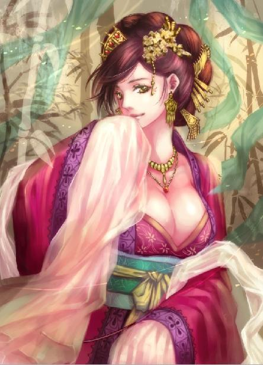

第25集·烈山雪战
江州篇（1/7）
出版日期：2011-08-12
【本集内容简介】
江州在萧遥逸的主导以及水泥所发挥的功效下，武装得固若金汤。程宗扬接下孟非卿交付的协助战事、保护月霜这两桩任务，埋伏三川口，硬着头皮指挥扰敌战法。
宋国上四军之一的捧日军威容浩大、良兵铁骑地进发而来。星月湖不过数千之众，又逢大雪纷飞、积霜成冰的严寒天气，负责此战的青骓崔茂何来信心拦敌于此？这群重新集结的武穆王亲卫兵，当真能够以一挡百、锐不可挡？
※ ※ ※ ※ ※

封面人物：梦娘（赵媛）
程宗扬张开手掌搭在眼上，运足目力望着远方。地平线上飘浮着一层雾状的烟尘，形状宽扁，平而弥散。
“是步兵，大约有五六千人。”程宗扬停顿了一会儿，“好像还混杂有不少骑兵。”
臧修指着另一边道：“那边呢？”
程宗扬看了一会儿，“烟尘尖锐而高，那是一小队骑兵。数量……不超过二百骑，大概是警戒的游骑吧。”
臧修笑道：“行了，你可以出师了。”
为了避人耳目，星月湖众人化整为零，分批前往江州。因为有小紫在，孟非卿把几乎所有的好手，包括臧修、匡仲玉、吕子贞、马鸿……都放在这一组，无论人数还是实力，都是最强的一支。孟非卿和月霜一起，提前他们大概四五日的路程，这会儿应该已经抵达江州。
一路都能看到宋军正源源不断地往西开拨，单是自己遇到的人马，加起来差不多就有五六万人。整个队伍前后绵延超过二百里，这固然是因为在本国境内行军，不用太严谨，同时也表明宋军并不把江州的对手放在眼里。毕竟江州的守军只有两千，而捧日、龙卫两军各有五万人，即使不满员，也有七八万人马。
渡过沅水之后，路上的宋军数量明显增多，为了安全起见，众人避开大路，攀山越岭赶往江州。这一群人都是老江湖，路上遇到麻烦就远远避开，倒也没出什么事。
吕子贞从林中掠出，纵身落在队伍前方，先向程宗扬敬了一礼，然后笑道：“我看见了刘平的传令官，这一支应该就是夏夜眼的前锋了。”
夏夜眼是捧日军主将夏用和的绰号，据说他双目如电，夜间犹能视物。这次宋国出兵，以捧日左厢军的刘平为前锋主将，在这里遇上他的传令官，说明众人终于赶到了宋军前面。
程宗扬道：“老臧，你们车行那句话怎么说的？未晚先投宿，鸡鸣早看天。既然碰见了宋军前锋，咱们就先找个地方歇了吧。”
众人都无异议，匡仲玉道：“这条路我走过。前面有个荒村能落脚。”
程宗扬看了看方向，“那边有点绕路啊。”
臧修道：“我们兄弟皮厚肉糙的，草窝都睡惯了，可紫姑娘累了一路，总不能宿在野地里吧？”
看到臧和尚担忧的样子，程宗扬气都不打一处来。星月湖这班好汉还真够意思，生生抬了一顶轿子走山路，死丫头这一路脚都几乎没有沾过地，哪儿有半点辛苦的？
“行啊。大家都不怕绕路，咱们就按老匡说的，去荒村落脚吧。”
“是！”臧修挺胸应了一声。后面四名军士抬起轿子，朝荒村奔去。
村子是被山洪冲毁才荒弃的，一半的房屋都倒塌了，村中杂草丛生，到处散落着大大小小的鹅卵石，只有村子的祠堂建在高处，还保持着大致的形状。
马鸿和几名同伴分头进入村子，查看完毕打出平安的手势，臧修等人这才进入祠堂。吕子贞和几名军士扫净浮尘，在堂内搭好帐篷，然后各自在外面找好宿处，留出守夜的人手，开始打水挖灶，埋锅做饭。
程宗扬掀开轿帘，“大小姐，下来吧。”
一阵环佩轻响，一个美妇先下了轿，然后扶着小紫出来。离开晴州不久，泉玉姬接到六扇门总部传来的消息，让她立即赶回长安，汇报郑九鹰遇难的详情。按程宗扬的意思，泉贱人干脆辞了公务员的职务，来给自己当奴婢就挺好，但不知道死丫头跟她说了些什么，挥挥手就把她打发走了。
小紫拿出帕子，抹了抹他脸上的灰尘，娇滴滴道：“程头儿，你好辛苦哦。今晚让阿梦陪你睡，好不好？”
“哼哼！哼哼哼哼！”程宗扬道：“死丫头，你就气我吧！”
从晴州出来有月余时间，一路上自己跟着二十多条精壮汉子同吃同住，真见识了这伙兵痞的嘴脸。一到吃饭的时候，生生都是群活狼，而且这伙兵痞都是眼观六路、耳听八方的人物，想瞒着他们偷香窍玉比登天都难。再加上臧修等人将来都是自己的手下，即使为了不被自己的兵看扁，程宗扬也只好耐着自己那点心思，活活当了一个多月的和尚。
那伙兵痞对死丫头可照顾得很，轿子就放在祠堂门口，小紫下了轿子便直接进了帐篷。帐篷是用薄羊皮硝制成的，比一般的牛皮帐篷更加轻便，里面丝被、绣枕、锦靠一应俱全，平常只供小紫和梦娘休息，自己连边儿都摸不到。
“程头儿，”小紫笑吟吟道：“让他们打盆热水来，人家要洗脚，阿梦也要洗洗身子呢。”
死丫头明知道自己看到吃不到，还变着法子地逗自己。程宗扬扯开喉咙，让外面的兄弟都能听见，“是！在下明白，小姐还有没有别的吩咐？”
“想到再叫你好了。”
外面臧修正与鲁子印、吕子贞、匡仲玉等人商量。鲁子印和吕子贞都是中尉军衔，分别担任一排和二排的排长，匡仲玉是一连的专职术者，再加上目前已经在江州的三排长少尉俞子元，这几人算是一连的核心。
星月湖大营是三三制，十人一班，三班一排，三排一连，加上连长直属的一个班，一个连总共一百人。谢艺的一营有三个连，满员三百人。整个星月湖大营有两个团，六个正规营，以及两个团部直属营，一共两千四百人。但自从星月湖大营解散，所有军士或是解甲归田，或是隐身江湖，从来没有补充过新兵，孟非卿估计，整个大营大概缺员两成左右。
程宗扬坐下来，“和尚，离江州还有多远？”
臧修道：“今天赶了九十里路，离烈山还有二十多里的路程。再花一天时间过烈山，便进入江州境内，离江州城还有一百四十里，最多三天就能赶到。”
程宗扬这一路算是见识了他们的行军速度。由于鹏翼社已经被宋国盯上，出于谨慎，众人没有利用鹏翼社现成的车马，而马匹在宋国是重要的军用物资，为了避免节外生枝，渡过沅水之后，众人都是徒步行军，在全员负重的情况下，每天轻松走一百多里，完全是急行军的速度。但考虑到这些人都是特种兵教练的体格，这个速度也不算让人太吃惊，只不过苦了自己这个陪练，每天拉出来跑十趟五公里越野，还连续一个多月。有过这样的经历，什么马拉松、铁人三项，在自己眼里全都是渣。
“商量什么呢？”
“从哪里过山的事。”臧修道：“烈山有两条路，大路平坦但路程稍远，小路近一些，但有几处地方不好走。”
“你们的意思呢？”
鲁子印道：“我的意思是走大路。反正现在已经赶到宋军前面，走大路更安全。”
吕子贞道：“我认为走小路。宋军前锋已经抵达此地，以他们的速度，迟则七日，快则五日，便会到江州城下。早一日到江州好早些做准备。”
匡仲玉道：“我也能同意走小路。小路的险峻对咱们这些兄弟们来说算不得什么。万一有事，也比大路容易脱身。”
程宗扬扭头道：“老臧，你呢？”
“小路。”臧修画出烈山的大致走向和两条路径，指点道：“大路可以供骑兵通行，今天遇到的骑兵，很可能和我们同一时间入山。如果走大路，我们再快也快不过他们的战马。相比之下，还是走小路更安全。”
四人发表完意见，都停下来等程宗扬吩咐。
“大伙说的都有道理。不过我看走大路更合适。”程宗扬道：“咱们是分批行路，每赶到江州一批兄弟，都在报告宋军所在位置。江州那边对宋军的了解，恐怕比咱们更详细。你们觉得一旦知道宋军前锋已经接近烈山，萧少校那只小狐狸会老实在江州等着吗？”
程宗扬指着大路的位置道：“我敢肯定，萧少校在大路派了人。如果我们走大路，能第一时间与他们会合。”
四人一听就明白，星月湖的军士在山中埋伏，目的只有一个：袭扰宋军。四人都是胆大包天之徒，听到有仗可打，顿时笑逐颜开。臧修道：“公子说的对！明天入山，咱们就走大路！早点和兄弟们见面！”
几人商议完毕，饭蔬也盛了上来。这些年星月湖大营颇有几个跑到饭馆当厨子的，甚至出了两位名动一方的大厨。可惜孟老大百密一疏，只顾着往队伍里塞能打的强手，却忘了派个能做饭的来，结果自己吃了一路糙米煮野菜，不仅味如嚼蜡，而且倒尽胃口。
“干！这是什么？”程宗扬从菜里拔出一条长长的东西。
“蚯蚓，熟的！”臧修一筷子挟走，“啯”地咽了，咂着嘴道：“够肥！”
程宗扬嘴角抽搐了几下，然后扭头一阵干呕。
臧修意犹未尽地说道：“那年在北疆，我跟谢中校追踪真辽军的主力，因为不敢生火，生吃了半个月的活蚯蚓，那滋味……”
“死和尚！给我闭嘴！”程宗扬铁青着脸捧起那碗饭菜，索性闭上眼一阵猛扒。眼不见心不烦，一口气吞完，然后把碗一丢，“饱了！大伙赶紧吃，明天提前一个时辰，寅时就走！”
“得令！”
臧修等人风卷残云般一阵狼吞虎咽，然后各自休息。
※ ※ ※ ※ ※
烈山是晋、宋与昭南三国交界的界山，东麓属宋，西麓属晋，向南绵延百余里，越过栖霞山，就是昭南的昆吾城。
六朝各自扩张，国境相邻处，往往是大山大泽之类难以开发的区域。烈山峰峦叠幛，山势高峻，由于雨量充沛，每到春夏之季，山上积雪融化，往往爆发山洪，因此人迹稀少。
山间的道路说是大路，其实只是在一些平整易行的地方伐去树木，能供车马通过，平常只有六朝的商人和使节往来，如今江州之战一触即发，行人早已绝迹。但这时，山岗高处正立着一匹健马，一名短发汉子跨在马背上，鹰隼般的双眼盯着山下的大路。
一股烟尘远远驰来，形状尖锐，凝聚不散，看得出是一队骑兵正疾驰接近。马上的汉子注视良久，然后将一根铜哨含在口中，吹出一串鸟鸣。
来的是捧日军的轻骑，一共两都，一百六十骑。军使刘宜孙很清楚这意味着什么。骑兵一直是宋军的软肋，与步军每都一百人的配置不同，骑军每都为八十人。表面上看，捧日军有四个军的骑兵，八千骑的数量远远超过其他禁军，但这只是名义上的数字。事实上，即使在最精锐的捧日军，也有一半的骑兵没有马匹可乘，整个捧日军的战马还不足四千匹。刘宜孙常常羡慕北疆那些崇拜苍狼和青天的敌手，他们的军队出动时，往往一人携带三四匹马，而捧日军的骑兵两人才能分到一匹马。
这两个都是捧日军少有的满员骑军都，隶属于捧日左厢第六军。今天黎明，军指挥使郭遵越过指挥使郭逵，叫来刘宜孙和张亢，当面命令他们作为捧日军的先锋，带领部属进入烈山，为大军选择营地。
如果顺利的话，自己就是第一支踏入晋国境内的宋军了。刘宜孙心里涌起一丝激动，然后又省觉过来，有些不好意思地看了看旁边那个脸色冷峻的男子。
张亢比他年龄大得多，曾经当过一任知州，仕途也算顺利，不知为何莫名其妙转了军职，而且还是从最低级的押头作起，离开临安前才升到副军马使。因为军使临时调任，才得以指挥这一个都，八十名骑兵。
与宋军相似，晋军同样不以骑兵见长。自己的八十骑人马精良，即使遇敌也可攻可逃。当然，刘宜孙知道自己面临的对手并不是正规晋军，而是星月湖叛军余孽，但星月湖大营全盛时，也仅仅是宋军中不入流的厢军，他们再强能强过自己这支上四军最骁勇的骑兵都？
张亢显然不这样想，离开营地他就主张缓进，尽量保存马力。刘宜孙的理由也很充足，捧日军营地离烈山不足二十里，全速奔驰，半个时辰就能赶到。在山下歇息半个时辰，总比花一个时辰在路上慢慢走合算。
为大军开路，选择驻地，在刘宜孙看来，这是一份唾手可得的功劳。郭遵派遣一个满员都作为协助，领头的张亢军职却比自己低半级，等于是给了他两个都的骑兵让他立功，还没有人来分功劳。
郭遵这样照顾自己，刘宜孙也不敢掉以轻心。参战之前他作足了功课，知道烈山不仅有大路可供骑兵驰骋，而且驻军的营地也是现成的，就在越过烈山中线的晋国一侧，有一片开阔地，可供大军驻营——毕竟他的父亲刘平是郭遵的顶头上司，捧日军左厢的厢都指挥使。刘宜孙所知道的信息，有许多是张亢作梦都想不到的。
但刘宜孙也并没有因此小看张亢。父亲刘平文武双全，为人轻财仗义，刘宜孙也不是一般的纨绔子弟，而且宋国崇文抑武，张亢和自己的父亲同样是进士及第，却弃文从武，让刘宜孙平添了几分敬意和亲近感。
“张大哥，按你说的，在这里歇半个时辰，养养马力吧。”
张亢环顾四周，然后点了点头，喝道：“下马！”
隶属于他的八十骑立即勒住坐骑，翻身跳下马背。刘宜孙的手下纵骑小跑几步，减速后才纷纷下马。
刘宜孙道：“大哥练的好兵，论起令行禁止、举止如一，小弟可差远了。”
张亢笑着说道：“你的兵也不错。”
刘宜孙道：“我听出使晋国的使节说，烈山的山路全长五十余里，可供四马并行。过了主峰之后，有一片平原，因为三溪并流，叫三川口。”他拿出一幅自己绘制的地图，指点道：“三川口离进山的位置大概有二十里。如果全速行进，用不了一个时辰就能赶到。”
张亢聚精会神地看着，没有作声。
刘宜孙道：“这样的话，我们半个时辰后进山，大军距离我们有十五里，等我们到达三川口，大军离我们有二十多里，两个时辰左右能抵达营地，等傍晚扎好营寨，最迟后天，我们就可以进入江州地境了。”
张亢指着地图道：“这是什么？”
“哦，使节说进山四五里的地方有条溪水，水面不宽也不深，不用下车就能过去。”
张亢沉默了一会儿，然后道：“不妥。我军远道而来，已经跋涉一个多月，这二十余里路，大军过了午时才能走完。如果立即进山，半夜方能赶到三川口驻营。大军夜行，又在山中，一旦遇袭，只怕立刻就要大乱。”
刘宜孙提醒道：“郭指挥使给我们的军令，是入山寻找驻营地。况且加起来四五十里的路也不远，往日行军，都走过的。”
“那是在我们大宋境内。”张亢道：“到了此地，随时都可能有敌军偷袭，宁可谨慎一些。”
“叛军所在的江州城，离这里还有一二百里。探子说，城中只有一两千的贼军，现在正招募民壮守城，即使来袭，能有多少？”
身后的捧日军不仅有郭遵的第六军，还有王信的第三军和卢政的第七军，总共六千余人。在刘宜孙看来，只用这支先锋就足以击溃星月湖叛军余孽，何况后面还有数万大军。
张亢道：“卑职有一策，供军使参详：我们两都各出十骑，在前探路，另出五骑，与营中联络。剩下的一百三十骑，缓缓进山，与大营保持十里的距离。”
刘宜孙道：“是不是太谨慎了？”
张亢道：“兵者，死生之地，存亡之道，不可不察。”
刘宜孙道：“十里太近了，反正总共二十里，不如速去速回。”
两人商谈片刻，最后张亢作出让步，同意把探路的减少到每都五骑，两两相距一里，一旦遇敌，立即示警。这样主力一百四十骑与探马保持五里的距离，如果真有敌情出现，也可以选择是作战还是撤退。
骑军依次入山，第五组出发不久，刘宜孙和张亢也乘马踏上山路。
※ ※ ※ ※ ※
臧修回头看了一眼，“咱们被捧日军的娘儿们撵上了。”
吕子贞道：“只有两骑，我去把他们打发了。”
匡仲玉道：“后面还有，像是那两个都的骑兵。”
程宗扬道：“把兵刃收起来，咱们是赶路的客人，又没马匹。”
两名披甲的宋军骑兵拿出小旗，向后打出旗号，然后与他们擦肩而过，接着又是两骑，同样打出旗号。不多时马蹄声响起，一百余骑沿着山路驰来，将已经退避到路旁的程宗扬一行包围起来。
一个年轻军官在马上道：“你们是哪里人？”
打扮成幕宾模样的匡仲玉点头哈腰地说道：“回军爷，我们是昭南人，从昆吾往临川去，路过此地。听说路上不太平，雇了几个脚夫。这穷山恶水，小的正担惊受怕，刚才见到几位军爷过去，心里才安生点。”
一个身材肥壮的男子道：“怎么这个时候去临川？”
“军爷明鉴，我们少爷家在昆吾，娶了临川王家的小姐，刚成婚一年，现在回临川拜见岳父大人。”
刘宜孙笑了笑，“原来是这样。你们……”
张亢道：“把轿子打开。”
程宗扬挡在轿前，“将军，里面是在下的家眷。还请将军留几分面子。”
刘宜孙低声道：“张大哥，这不合适吧？”
“昆吾离临川一千余里，这些人却连马都没有一匹，抬着轿子翻山越岭，难道不可疑吗？”
匡仲玉连忙道：“军爷明鉴！原本带的有马，前几日遇见贵军，把马匹都征用了。”
刘宜孙暗叫惭愧。军中缺马，这种事屡禁不绝，即便上四军的捧日军，也没少干过。他们从昆吾来，遇到的很可能是边境调集的乡兵。
张亢却不为所动，“本官是大宋捧日军副军马使张亢，尔等行迹可疑，本官命令你们立即把轿子打开，接受官军检查。”说着他一摆手，身后的骑兵拉开弯弓，搭箭瞄准众人。
程宗扬只好让开半步，张亢抬起马鞭，掀开轿帘，目光不由微微一闪。
轿中一个少女惊呼一声，连忙以袖遮面，掩住面孔。她眉枝如画，雪嫩的肌肤宛如明玉，如水的美目流露出怯生生的神情。在她旁边还有个美妇，虽然低着头看不清容貌，但香艳的气息呼之欲出。即便张亢这样的铁石心肠，惊艳之余，也不禁想起“我见犹怜”这个词来。
程宗扬赔笑道：“军爷，这是贱内，从来没见过外人的。”说着塞来一把钱铢。
张亢伸手一掂，便知道是银铢，他放下轿帘，然后朝手下一摆头。骑兵收起弓箭，张亢也不客气，一边策马离开，一边将拿到的银铢一分为二，一半递给刘宜孙。
刘宜孙从来没干过这种事，连忙推让。
张亢道：“军中辛苦，多少让兄弟们得点好处。这钱取不伤廉，拿着吧。”说着将剩下的一半交给本都的旗头，“老规矩，见者有份！”
张亢的手下发出一阵欢呼。看到自己手下的士兵虽然没作声，但都露出羡慕的眼神，刘宜孙苦笑一下，只好接了过来。
程宗扬远远看着两人在马上推让，“老匡，你说的那条溪水就在前面？”
匡仲玉道：“没错。那条溪看着平常，但里面都是碎石，稍不留神就伤了马蹄。”
程宗扬笑道：“那好，咱们就在这儿等着。小狐狸的人只要动手，咱们就抄他们的后路。”
说话间，刚才那名年轻军官调转马头，带着十余骑奔了回来。
臧修和鲁子印踏前一步，肌肉微微绷紧，不知道哪里露出马脚。
刘宜孙喊道：“你们要过江州？”
匡仲玉道：“军爷，要去临川，江州、宁州可绕不过去。”
刘宜孙勒住马匹，“没人告诉你们江州要打仗了吗？”
匡仲玉忙道：“听说了。所以小的们才急着赶路。”
刘宜孙道：“江州你们去不成了。那里如今被一群恶匪占着，那伙人是朝廷通缉多年的叛匪，杀人越货，无恶不做，我们这次去就是剿匪的。”
匡仲玉失色道：“这可如何是好？”
刘宜孙安慰道：“你们先回去找处落脚地方，迟则一个月，快则十天，等剿灭江州的匪徒，你们便可以平平安安去临川了。”
刘宜孙是一片好意。他平白拿了钱，多少有些愧疚，这些人再往前走，后面大军进山，想退都退不出来，特意前来提醒。
说话间，山坳后忽然传来战马嘶鸣，声音尖促而凄厉，刘宜孙浑身一震，扭头看去，便听到一片兵刃交击声，接着是军士的惨叫。
惊疑间，旁边一名骑兵大声喝道：“军使小心！”
臧修一手伸进轿中，擎出他的雷霆战刀，抬腕朝刘宜孙的坐骑劈去。战马跃起尺许，断颈血如泉涌，把刘宜孙掀下马背。
鲁子印、吕子贞等人纷纷动手，从轿中抢出兵刃。马鸿挥臂击碎充作轿杆的大楠竹，抓出里面的铁矛，抬手将一名骑兵刺下马背。
刘宜孙毕竟是将门虎子，一偏腿甩开马镫，从鞍侧拔出马刀，挡住一名脚夫的长刀。他手腕一震，惊愕地发现这些脚夫身手不是一般的强悍。
混战中，张亢带着人马驰回，他身边的一百余骑只余不足百骑，还有几个身上带着箭矢，神情狼狈。
程宗扬喝道：“老匡、老马！”
匡仲玉不擅近战，早退得远远的，听到叫声，他戟指喝道：“去！”
一条绳索从轿下钻出，蛇一样昂起头，朝大路另一端飞去。马鸿飞身跃起，铁矛一旋，挑住绳索，然后翻腕将铁矛笔直扎进山石。
绷紧的绳索立刻变成一道绊马索，疾驰而来的捧日军猝不及防，前面三骑顿时人仰马翻，跌成一团。
张亢一手扣着弓，在距离众人还有十几步的时候，突然从马背上站起身，挽弓、搭箭、瞄准、开弦、放箭一气呵成，利箭犹如流星，朝那个在轿旁指挥的公子哥射去。
程宗扬抽刀劈飞箭矢，咧嘴朝张亢一笑。张亢面沉如水，冷喝道：“果然是一伙贼寇！全都杀了！”
他身边的数十余骑同时举弓，箭矢雨点般射向众人，另外几人解下马刀，在战马狂奔的同时，俯身砍向绊马索。
捧日军的精锐确实有点门道，前后同时遇袭，还能保持阵形。这时近百骑连人带马同时冲来，连臧修等人也不敢硬撼。绊马索已经被砍断，如果把使用长兵器的马鸿等人调在前面，还能阻挡片刻，但刘宜孙带着几名手下在前苦战不退，让星月湖众人无法排出抵挡骑兵的拒马阵形。
程宗扬叫道：“老臧！”
臧修放开对手，朝刘宜孙攻去，刀在半途，便发出雷霆般的战鸣。
张亢脸颊抽搐了一下，“雷霆刀臧修！”
“还有人认识老臧！”臧修大笑道：“白脸小将军，吃老臧一刀！”
双刀相交，刘宜孙的马刀立刻崩出一个缺口，手臂如受雷殛。雷霆战刀力道未竭，在他臂上一拖，将他重金打造的犀皮坚甲斩开一道长长的裂缝。接着另一个使快刀的脚夫飞身跃来，旋风般将那个救了他一命的部下劈下马，鲜血溅得他半身都是。
张亢策骑喝道：“上来！”
刘宜孙目眦欲裂，原以为轻轻松松立下一桩功劳，谁知第一次上阵就折损了这么多部下。即使能活着回去，有什么面目去见军指挥使和父亲。
“不用管我！你们走！”
两名骑兵挥刀挡住臧修，张亢一把抓住刘宜孙的背甲，将他拖上马背，“徒死无益！活着才有翻本的机会！”
捧日军的骑兵已经收起弓，摘下鞍侧的短矛，排成冲锋的阵形，一边抵挡来袭的兵刃，一边跃过跌倒的同伴，往前厮杀。
孟老大说过作战的八条戒律：高陵勿向，背丘勿逆，佯北勿从，锐卒勿攻，饵兵勿食，归师勿遏，围师必阙，穷寇勿迫。这支骑兵占了八勿的一半，如果硬拼，损失不可避免，敌人跑了还能再打，这班手下死伤一个都够自己心痛的。
程宗扬叫道：“不要硬挡！打两翼！”
臧修等人让开大路，从侧方将敌骑一一刺下马来。捧日军前方压力顿轻，张亢以文职从军，但弓马娴熟，丝毫不弱于刘宜孙这样的将门子弟，他抓住这一线生机，趁后面的伏击者还没有追来，带着残余的数十骑毫不停顿地直闯出去。
战斗来得快，结束得也快，张亢等人刚逃出百余步，身后十余名被这群脚夫拦住截杀的骑兵已经没有活口，只剩空鞍的马匹四处跳逸嘶鸣。众人收拢了逃散的马匹，把受伤哀鸣的战马补刀杀死，免得它们受苦。
山坳后的搏杀声渐渐低弱，片刻后，一匹快马从山坳中驰来，程宗扬远远看见，笑着对臧修道：“咱们俞老板看起来够精神的啊！”
※ ※ ※ ※ ※
俞子元穿着一身青黑色劲装，背着一柄长刀，看上去精强干练，哪里还有半点商人的市侩气？他利落地跳下马背，向程宗扬敬了个军礼，“程少校！”
程宗扬左右看了看，“老俞，没认错人吧？”
俞子元朗声道：“团长孟上校前天晚上已经抵达江州，宣布命令，授予公子少校军衔，任一营营长。同时一营、六营设为一团，由公子暂领；四营、五营设为二团，由侯中校统领；二营和三营为三团，由孟团长协助月小姐统领。”
孟老大着手将星月湖大营交给岳帅后人，将部队重新编成三个团是第一步，看来一营和六营就是小紫的嫁妆了。
程宗扬道：“怎么是你们打头阵？来了多少人？”
俞子元笑道：“是我向萧少校要的差事，都是我们一连的兄弟，当然该我来接应。城中人手不足，我这趟只带了一个班，十名兄弟。”
程宗扬道：“十个人就敢打一二百骑的伏击？”
“我们接到的命令只是袭扰，萧少校要求将宋军进驻三川口的时间拖延两到三天，若不是遇见大伙，也打不成这样。”俞子元笑道：“何况顺利接到长官，属下已经立了一功。”
程宗扬偏着头掏了掏耳朵，“长官？听起来怎么这么别扭呢？”
臧修大声道：“程长官！多听听就顺耳了！”
旁边的军士发出一片笑声，程宗扬板起脸，挺胸凸肚地说道：“严肃一点！注意军纪！”
“是！长官！”
笑声中，俞子元道：“属下的任务还没有完成，不能陪长官回江州，先派一名兄弟给长官领路。”
“你们人手本来就不多，还派什么人呢，我们自己去就行了。”
臧修挺胸道：“长官！不如让我带一半兄弟留下，反正都是我们一连的人！有两个班，也好照应！”
“臧和尚，你能不能不叫长官？”
“是！长官！”
“你以为这样我就让你留下了？休想！老吕，你带十名兄弟留下。”程宗扬告诫道：“记住，保命第一，其他的都是小事。”
吕子贞喜形于色，臧修垂头丧气，接着俞子元带来的军士也赶了过来，同袍相见，场面更加热络。
趁众人说话的工夫，程宗扬敲了敲轿子，“死丫头，你没事吧？”
小紫懒洋洋道：“好气闷呢。”
“就快到江州了，等你好一点了，我带你骑马。”
这场伏击前后不过一刻钟，捧日军丢下的尸体就有三十多具，俘获了近四十匹战马，对于缺乏骑兵的星月湖大营不无小补。众人收拾完战场，又砍来树枝做成轿杆，用四匹马前后驮着轿子，一行十余人带着剩余的马匹赶往江州，与大营会合。吕子贞则带领十名军士留下来，与俞子元一起执行任务。
※ ※ ※ ※ ※
第二天中午时分，程宗扬一行终于看到江州城的轮廓。早己闻讯在城外等候的一彪人马立刻迎了过来，当先一骑金冠束发，锦衣白马，英武风流，正是小侯爷萧遥逸。
“程兄！”萧遥逸远远叫道：“你可来了！想死小弟了！”
程宗扬露出笑容，这小子一点没变，被王茂弘踢出建康，宋军又大兵压境，还是一副神采飞扬、牛气冲天的样子。
萧遥逸跳下马，先向轿子揖了一礼，“紫姑娘一路可好？”
小紫掀开轿帘一角，笑盈盈道：“奴家好，小侯爷可好？”
萧遥逸笑道：“万事俱备，只待宋军！”
小紫嫣然一笑，放下轿帘。
臧修立正向萧遥逸敬了个军礼，“萧长官！”
萧遥逸还了一礼，“臧连长，好久不见了。”
臧修昂然道：“能在岳帅旗下与诸位长官并肩作战，是卑职的梦想！”
“好！”萧遥逸叫道：“苏骁！”
他身后一名军官踏前一步，正是自己在晴州见过的抛弃秦军右庶长爵位，奔赴江州参战的苏骁。
萧遥逸道：“带臧上尉和各位兄弟去大营报道。”
“是！兄弟们随我来！”
苏骁翻身上马，带着众人驰入江州城。
萧遥逸转身结结实实给了程宗扬一个拥抱，大笑道：“此番我们兄弟又可以联手纵横天下了！”
程宗扬道：“你好像一点都不怕啊？我们刚和捧日军交过手，比建康的禁军只强不弱，别说七八万，就是两三万这样的精锐，你就吃不完兜着走了。”
萧遥逸道：“你看我的江州怎么样？”
“好地方。一马平川，连树都没有几棵，都是没开垦过的良田呢。”程宗扬道：“不过打仗就惨了，无险可守。宋军想怎么打就怎么打，几万人随便摆个什么大阵，当场就要你难看。”
“程兄说的不错。”萧遥逸举着马鞭道：“从烈山西麓一直到大江，一百余里都是平原，大军尽可以从容布阵，易攻难守。怪不得王茂弘这么大方拿出来，原来老家伙又摆我一道。如果不是有程兄帮忙，我只好带齐人马，到山中拼死狙击宋军了。”
程宗扬讶道：“我帮什么忙了？”
萧遥逸笑道：“你不会是忘了吧？看！”
程宗扬顺着他的马鞭望去，只见江州城前多了几个奇怪的东西，头大底小，形如哑铃，颜色灰扑扑的，怪模怪样地矗立在城门前。
驰近看时，才发现那是六座城堡，每座相隔六十余步，分成两个品字形，排列在城墙之前。城堡形状与他见过的完全不同，底部呈圆形，直径不过两丈，高度却将近五丈，比后面的城墙还高出一丈，顶部呈方形，上面还有城堞和哨楼。城堡通体看不到门窗，也没有石块堆砌的痕迹，粗糙的表面呈现出深灰的颜色。
“水泥？”
“没错！要不说你帮了我大忙呢！”萧遥逸道：“江州的城防几十年都没修过。进城的时候我都担心吊胆，生怕城门倒下来把我砸死。”
“有那么夸张吗？”
“骗你是小狗。”萧遥逸道：“卢五哥见过你之后，从建康把祁远带来。我们先在城门试过，本来城砖都松了，也不用拆，就把你弄的那个水泥，掺了水和沙子，往缝隙里一灌，比新建的还结实！”
萧遥逸道：“多亏了祁远，那家伙没日没夜干了两个多月，在城外建了十二座城堡。南门这边有六座，北门有三座，东面没有城门，也在城外建了两座，还有西边靠近大江的水门，也有一座了。”
“十二座？这么快？”程宗扬有点不相信地问道。
“本来还能快一点，但开始耽误了。最初建的一处，过了两三天发现，抹好的水泥一晒干就会裂开。最后还是祁远琢磨出来，要往上洒水才行。要不是耽误了半个月时间，还能多建两座。”
程宗扬仰望着城堡顶端突出的方形堡塔，“这东西结实吗？”
萧遥逸“呯”的一拳砸在城堡的墙壁上，水泥粗糙的表面纹丝不动，“里面都是一尺宽的条石，每层用水泥浇灌，外面打了两层网状的竹筋，然后填进混过碎石、沙子的水泥。我们试过，比一般的青石还硬，只要厚度足够，用一般的石弹根本砸不动。就是太耗材料了，像这样一座城堡，单水泥就要近两千石。”
程宗扬估算了一下，这差不多是一百吨的重量，“有这么多？”
“你不知道吧？”萧遥逸笑道：“云家出了十几条货船帮忙运石灰和沙子，我招募民夫把周围几十里的树木都砍了，拿来烧水泥。”
“我还是不相信，你们两个多月能建成十二座这样的城堡。这也太快了吧？”
“水泥、沙子、石料、木头、竹子都是现成的，人力我手头有的是。”萧遥逸道：“我招募了两万民夫，几千人昼夜不息，二十多天就能建成一座，最多的时候六座城堡同时开建。晚上烧窑的火光几十里外都能看到。”
这完全是用人堆出来的，一座城堡几千人同时开工兴建，难怪能这么快。
“建得跟柱子似的，连门窗都没有，你的人怎么进去？”
萧遥逸大笑道：“连你也瞒过了。江州的护城河都淤成浅沟了，我索性让人把它填平，在城内挖了地道，通向各堡。我把城堡建到五丈高，一般的云梯只有三四丈的高度，连上面堡塔的边都摸不到。宋军不来则罢，要敢强攻，我非打他们个灰头土脸！”
程宗扬想象着如果自己是攻城的宋军，在距离第一座城堡一百步的时候，就会受到弓弩的劲射，再往前走四十步，便进入另外两座城堡的射程，当接近城堡的时候，更会受到周围四座城堡、甚至城墙上的射击。如果自己运气够好，能活着冲到城堡下，还要面对一个没有任何地方可以攻击和攀爬的怪物。
如果绕开城堡，直接攻击城门，来自城墙和六个城堡的弓弩能组成一个没有死角的射击区域，使进攻方陷入腹背受敌的境地。而城堡下的地道可以提供源源不绝的给养和补充，想掘断地道，难度恐怕比攻破城门更高。
萧遥逸道：“每座城堡只需要三十名射手就能守住，宋军的床弩、石砲在堡下毫无用处，只能拿人命来填。这几座城堡，宋军几千人也未必能攻下来。”
程宗扬相信他的判断，在没有火炮的时代，这六座水泥怪物，将会成为江州城下宋军最可怕的噩梦。
“他们若是弃堡攻城，我这里还有悬楼。”萧遥逸指着城墙道。
城墙上每隔一百步，就有一间小型堡垒，像蜂巢一样悬在墙外。这种东西自己从未在任何资料上见过，看来也是江州获得水泥后的创举。
“走！到城上去。”
萧遥逸拉着程宗扬进入江州城。高大的门洞全部用水泥砌过，看不出以往摇摇欲坠的破败模样。顶部开着两尺宽的闸槽，可以在敌军进攻城门时，放下石闸阻挡。由于原料充足，整个石闸也换成了竹筋的水泥板。城门内侧左右各有一道台阶，此时一群民夫正扛着盛在柳条筐内的水泥往城上运送。
萧遥逸老老实实待在一边，等民夫经过，才带着程宗扬上去。
程宗扬道：“我没看错吧？在建康纵马狂奔的小侯爷，居然也会给人让路？”
“这些可都是我的人啊。”萧遥逸一脸正经地说道：“替我们种田、干活，还替我打仗，能不客气点吗？”
说着小狐狸又肉痛起来，“你不知道，江州城总共才五六万人，加上周围的村镇也不到三十万口，说是一个州，还不及一个大县，能招募两万丁，我可是掏了血本了。一日两餐管饱，加上每日的工钱，两个月花掉我一两万贯，这些可都是活生生的钱啊……”
“你自己掏钱？”
“可不是嘛。”
六朝赋税各有不同，但大致分为三类，一是田租，按田亩向官府缴纳田税；二是兵役，成年男子按规定自行准备兵器用具到指定地方服役；第三是力役，为官府提供铺路、挖渠之类无偿劳动。修筑城墙属于典型的力役，像萧遥逸这样掏钱雇工的官府绝无仅有。
萧遥逸肉痛了一会儿，又得意起来，眉飞色舞地说道：“不过这钱花得也值，民夫们听说有钱可拿，干活也肯卖力气。一个月的活半个月就能做完，对水泥看得比我们还金贵。像这悬楼，就是他们想出的主意，算下来还是我们赚了。”
那群民夫正在赶筑悬楼，他们先用木板伸出墙外三四尺的距离，然后在城墙和悬楼的结合处架上条石，免得断落，接着倒上掺了沙子和碎石的水泥，再铺上用大毛竹劈开扎紧的竹蔑，又倒上一层沙石水泥，形成一道简易的混凝土地板。墙壁则是把竹筋编成笼状，两侧打上木模板，再灌入沙石水泥，做成一个半圆状的垒巢，周围留出射孔。
这种悬楼结构虽然简单，但在没有水泥的情况下，想造出这样的悬楼需要熟练的工匠精确切割、拼接石料，两个月也未必能造成一个，而现在几十名民夫十几天便能建成，而且比石堡更精细。有了悬楼，可以从侧面攻击攀附在城墙上的敌军，守城的威力不言而喻。
程宗扬站在城头四处观望，城墙上的门楼、城堞、女墙、射口都用水泥加固过，一眼望去，整整齐齐的城堞透出一派萧杀的灰色。朝远方望去，辽阔的原野从遥远的烈山山麓延伸过来，像地毯般在眼前铺开。六座粗糙的水泥城堡在城池前森然矗立，像巨兽一样守卫着江州的城墙。
萧遥逸满脸遗憾地说道：“如果不是时间来不及，我还想把整个江州城都抹一遍呢。”
“这都够结实了。”程宗扬拍了拍水泥城墙，虽然没有磨光抛平，表面显得很粗糙，但掺过沙子和碎石之后，已经和自己见过的水泥混凝土相差无几。
程宗扬道：“咱们手头有多少人？”
萧遥逸道：“星月湖大营共有一千七百八十五人，带上今天到的，有一千八百人。雇佣兵两千人。另外从民夫中招募了五千人，其中三千人已经训练两月有余，拉出去也能打上一场半场。”
“雇佣兵是不是有点太多了？”程宗扬记得孟老大计划拿五万金铢招募一千名雇佣兵，现在翻了一倍，比星月湖大营的人都多，有钱也不能这样花啊。
“听说江州要打仗，晴州的雇佣兵就像苍蝇见了血，都飞了过来。有几个大团还说打完仗再拿钱。”萧遥逸摸了摸下巴，好像还觉得晴州佣兵团大方得不可思议。
程宗扬想起敖润和冯源，“雪隼团来了吗？”
“你猜雪隼佣兵团来了多少人？”萧遥逸比出拇指和小指，“六百人！占整个雪隼佣兵团的六成！”
“副团长石之隼带队的吧？雪隼团这么卖力？”
“雪隼团的老大薛延山和云六爷交好，听说江州的事云家也有份，当即就拍了板。再则月姑娘以前在雪隼团待过，他们得知月姑娘是岳帅的后人，有心来攀交情。”
这和风险投资一样，雪隼佣兵团在星月湖身上押了重注，一旦江州之战星月湖得胜，作为武穆王的嫡女，月霜就相当于江、宁二州的女主人，对雪隼佣兵团的好处不言而喻。但一口气派来六百名雇佣兵，这样的大手笔，还是超乎自己的想象。
“江州城并不大，南北长两千步，东西宽一千七百多步。”萧遥逸道：“因为城小，只在南北两面开了城门。大江由北向南从城西流过，西边开着水门，船只可以直接驶入城中，只要水路不被切断，宋军就不可能彻底围城。”
“一旦宋军兵临城下，我们打算在北、东、南三个方向各投入一个营，二到三百人，雇佣兵五百人，民夫一千人。这样城中还有三个营，五百名雇佣兵和两千民夫随时调度。”
萧遥逸倚仗坚城，对这一仗信心十足，程宗扬仍有些担心，提醒道：“别太大意了。再怎么说，宋军也有七八万人。比你招的民夫还多几倍。”
萧遥逸笑道：“宋军来得越多越好。眼下已是腊月，只要我们支撑半个月，宋军便要在城下过年。以江州的储备，足以支撑到三月。到时单是军中的耗费，就能把贾师宪压死。”
这倒不是空话。大军在外，吃喝作战都要消耗大量物资，况且是千里转运，宋国储备再充足，也难以支持。贾师宪调动大军，就是想以雷霆万钧之势，一举解决江州的事端，免得打成消耗战。但这只是他的一厢情愿，至少孟非卿、斯明信、卢景、萧遥逸等人就不会答应。
“贾师宪真是猪油蒙了心，在临安老老实实斗他的蟋蟀，我们不去找他麻烦就不错了，还跑来江州找打。”萧遥逸意气风发地说道：“走！我带你到城中看看！”
江州城内并没有忙碌备战的气氛，除了几队民夫在修葺城防，城中静悄悄几乎看不到人影。萧遥逸告诉他，一个月前，江州的居民就陆续迁往对岸的宁州，如今除了不愿离开的几千人，江州城已经成为一座纯粹的兵城。
萧遥逸一边走一边指点，“城中南面是民舍，东西各有一座市坊，西北方向是粮仓和军械库，从晴州运来的粮食兵甲都储存在这里。”
城内房舍密度并不大，不少田地都种着菜疏，看来还有很大的居住空间。说话间，前面出现一片空地，只剩下泥土的台基上，整整齐齐扎着帐篷。
“这是什么地方？”
萧遥逸道：“江州官署。”
程宗扬左右看了半天，“官署在哪儿？”
萧遥逸笑嘻嘻道：“我把江州的官署和庙宇都拆了。没办法，石料不够。你总不能让我去拆民居吧？”
“然后你就把大营扎在这儿了？”
“免得扰民嘛。”萧遥逸扬鞭道：“雇佣兵都在东市，里面有客栈、酒肆、赌坊，一到夜间就热闹非凡！”
说着他凑过来，压低声音，挤眉弄眼地说道：“里面还有家妓馆，前些天新来一批娼妓，嘿嘿，我换了便服去过，比建康的也差不了多少，热辣得紧。上了床包你腿软……”
“不会吧？这时候还有娼妓来做生意？”
“挣钱的生意谁不来？真要宋军打进城里，她们也照样做生意。说不定生意还更好呢。”萧遥逸小声道：“程兄要有兴趣，我先包两个美人儿，今晚咱们去乐乐。”
程宗扬沉吟道：“我走了一个多月，好不容易到了江州，就一头扎进妓馆，好像从晴州几千里地赶过来，就为了到江州嫖妓。是不是有点不好看？”
“名士风流嘛。”萧遥逸道：“也就是程兄你，换作别人，我才不跟他一块儿嫖呢。”
“干！”程宗扬道：“少扯这些没用的！你答应我的地呢？”
萧遥逸大笑道：“就知道你要问这个！早就给你备好了！”
“这是西市！”萧遥逸带着众人来到城西一座坊市，指点道：“虽然不及东市大，但地势极好。北边是府仓，西边紧邻码头，南边都是江州富户的宅邸。坊内客栈、酒肆、商铺一应俱全。”
整座坊市被一个十字形街道划分成四块，由于商户都迁往宁州，各间商铺都空着。萧遥逸指着西北一片铺面道：“这一块是官营的铺面，都是你的！”
“死狐狸！我就知道你没安好心，把最烂的一块给我。”
“别误会啊！”萧遥逸道：“其他几处都是有主的，我倒是想全买下来送给你，当作咱们兄弟的定情之物，可这帮没良心的商户要不不肯卖，要不就漫天要价。我这次招募民夫可是出了血本，连我从小攒的压岁钱都用光了，就是说想买也买不起，只好把官铺送给你。天知道前几任江州太守都是干什么吃的，房子破了都没人管。这些铺面我一文钱不要，连地契全送给你，然后再免你三年的税，够意思吧？”
“少来！你是想让我给你修房子吧？都破得快成危房了，免税三年你也说得出口？至少十年！”
萧遥逸叫道：“哪儿有那么破啊！最多五年！商铺都给你了，缴点税还这么小气。”
程宗扬道：“那我要水泥的专营权，利润四六分，我六你四。”
萧遥逸怔了一下，然后像刚偷了只母鸡的小狐狸一样笑了起来，“成交！”他搂住程宗扬的肩，由衷说道：“程兄，你简直是我亲哥！”
程宗扬道：“别肉麻了。你比我大好不好？”
“那就是我亲弟弟！”
程宗扬那句话其实是把水泥拱手让出，萧遥逸深知此举对江州意味着什么。江州地处晋国东疆，人丁稀少，又没什么出产，比其他州郡穷困得多。程宗扬愿意接手官营的商铺，已经是好事，现在又把水泥交给自己，只要经营权，等于给了自己一只能下金蛋的母鸡，一旦开始售卖，江州想不发财都难。
西市唯一一家客栈已经清理干净，一名军官站在台阶前，挺拔的身材犹如军刀。他双脚“啪”地一并，向两人敬了个军礼，“程少校！萧少校！”
程宗扬怔了一下才认出来，“萧五？”
萧遥逸笑道：“这是我们六营的副官，往后专门负责紫姑娘的安全。”
萧五伤势已经痊愈，气色好了很多，朗声道：“客栈已经整理完毕，程少校和紫姑娘随时可以入住。”
程宗扬道：“客栈只有我们住吗？月姑娘是不是也在？”
萧遥逸道：“月姑娘说习惯了住军营，反而是客栈住不习惯。我在大营专门给她设了处军帐。”
程宗扬放下心来，干笑两声道：“月姑娘一路上还好吧？”
萧遥逸佩服地说：“月姑娘把一路遇到的宋军都认真统计下来，包括军力、装备、将领是谁，至少摸清了宋军一半的底细。”
程宗扬道：“那个好战分子和你们碰到一块，这下算是如鱼得水了。”
“还说呢，老大正头痛呢。”萧遥逸道：“本来说给月姑娘两个营，月姑娘不同意，她说自己带不了，只要一个班。”
“一个班还不简单？给她好了。”
萧遥逸苦笑道：“她要带一个班亲自上战场。老大那么强横的人，怎么都劝不住她。我看老大都快给逼急了，说不定把军衔一摘，把我们兄弟都给踢到她的班里去。”
程宗扬笑眯眯道：“那也行啊。你们这个班肯定是战斗力最强的班。一个上校，一个少校，再加五个中校，啧啧，这阵容够华丽的。”
萧遥逸埋怨道：“你不能在旁边看笑话啊，我还想让你劝劝月姑娘呢。”
真是个好主意，为什么他们都不怕月霜把自己剁成馅呢？程宗扬道：“劝是不好劝，不行你就给她一个班，到时候再看好了。”
萧遥逸苦恼地摇了摇头，显然也对月霜的执拗感到头痛。把众人送到院内，萧遥逸停下脚步，“你们先休息吧。孟老大和月姑娘去察看地形，晚上回来再过来见紫姑娘。”说着他小声道：“喂，今晚真不去啊？”
程宗扬低声道：“有好的给我留一个。”
萧遥逸伸出大拇指晃了晃，然后做了个鬼脸，打马离开。
“公子！”一个满身是灰的人影奔过来。
程宗扬转过身，“老四！你怎么这德性！”
祁远咧嘴一笑，露出白牙，“刚从工地过来。老四以前也建过房子，从来没用过水泥这样的，拌好料浇上，几天就好，又快又结实！要什么样有什么样！”
“我看到你建的城堡了，好家伙，都是水泥柱子嘛。硬梆梆戳在那儿，影子都能压死人，宋军看着都想尿裤子。”
“打仗用的，怎么结实怎么来，模样就顾不上了。”祁远拍着身上的泥灰，“哎哟喂，老祁这把身子骨这回可给折腾苦了。”
程宗扬笑嘻嘻道：“听你这口气，不会是兰姑也来了吧？”
祁远老脸一红，“刚来了没几日……”
“还真来了啊？哈哈，兰姑对你真够意思！怎么不一块带来？”
“她在忙着呢。”
程宗扬随口道：“在哪儿忙呢？”
“东市。”
程宗扬一怔。
祁远道：“她在织坊待不住。听说江州来了雇佣兵，兰姑跟芝娘商量，从秦淮河找了些想赚钱的粉头，前些日子一船来了。”
程宗扬忍不住笑道：“刚才小侯爷还谈到呢，原来是咱们自家的产业。兰大姐这怎么说呢……”
祁远道：“兰姑这一行做久了，干这营生还开心些。怎么没见老秦呢？”
“会之带了批货，直接回了建康，过些日子才来。别的兄弟怎么样？”
“吴大刀跟彪子来过两趟，”祁远笑道：“听说吴嫂子有喜了。”
“吴大刀手脚够麻利的啊。彪子呢？”
“比以前好了点。听说江州打仗，我看他也想来呢。”
“好说，会之这趟回去，带他一块来。吴大刀要当爹的人，就在家伺候老婆得了。”
“芝娘她们都好，听说公子无恙，都高兴得不得了。”
祁远口头来得了，连比带划，说了建康众人的情形。程宗扬沉默片刻，“那个妖妇呢？”
祁远抿了抿嘴，“没有消息。公子平安的音讯传来，会之去寻公子，长伯找我问了五原城的位置，第二天就自己去了。”
程宗扬心头一凛，吴三桂一个人去五原城，胆子也太大了。
“有音讯吗？”
“没有。不过听说有人在竞州的醉月楼大打出手，听情形有些像长伯。”
吴三桂不是个鲁莽人，这点自己可以放心。只要不正面与苏妲己交手，保命应该无忧。
祁远刚待了一会儿，就有人找来，“祁爷！水门北的城堡已经晾干了，该浇多少水，还请祁爷赶紧去看看。”
程宗扬笑道：“你去吧，我让萧五给你留间房，就住这边得了。”
“成！”祁远笑着站起身，“老祁这是天生的劳碌命，到哪儿都闲不住。”
※ ※ ※ ※ ※
臧修等人直接去了军营报道，身边只剩下小紫和梦娘。客栈有的是空处，程宗扬让萧五安置了一处房间，然后去取祁远的行李，自己把小紫送到内院。
客栈并不大，是处前后两进的院子，唯一一处上房在内院的二楼，外面看起来普普通通，一进门程宗扬就吓了一跳。房中摆着一座镶金嵌玉的屏风，四壁悬垂着帷幕，榻前放着两尊三尺多高的银制熏炉，架上摆着玉器古玩，一器一物都华丽异常。
程宗扬打量着房间的陈设道：“小狐狸不会是把自己家里的好东西都搬来了吧？这熊皮够大的啊。”
天气已经是冬季，室内都铺着地毯，床榻前一张熊皮足有丈许长，头尾四肢皆全，没有丝毫破损，看得出猎来颇费了一番功夫。
小紫赤足卧在榻上，脸色微微泛红。程宗扬摸了摸她的额头，“是不是又不舒服了？”
“好烦啊。早知道就不告诉你了。”
“那就不说这个了。喂，你准不准备跟月丫头来个姐妹相认、抱头痛哭的戏码？”
小紫道：“她对她爹爹一点印象都没有了，有什么好哭的。好啦，人家要睡觉了。”
程宗扬挤到榻上，把小紫抱在怀里，“乖乖睡吧。”
小紫枕在他臂上，像猫咪一样闭上眼，手指却在他胸口写道：“有人。”
程宗扬不动声色地聚起真气，隐约感受到一丝微弱之极的气息，似乎有人正在屋顶窥伺。论修为自己比受伤的小紫怎么也要高那么一点点，但比起灵觉和敏感，就要差那么一点点了。
片刻后，那股气息迅速远去。程宗扬低声道：“是谁？”
小紫摇了摇头。
那个窥伺者似乎并没有恶意，但程宗扬还是不放心，萧五刚离开一会儿，就被人摸进来，看来得向小狐狸再要两个好手。
程宗扬坐起身，“你先睡吧，我出去看看。”
房顶的枯草已经被刈除干净，并没有留下什么线索。程宗扬四处看了片刻，忽然瞥见院侧一间小房子里有人影闪动。
程宗扬从房顶一跃而下，闪身闯进房内，悄无声息地一把抓出。没想到得手这么容易，那人毫无反抗就被自己一把抓住脖颈。
梦娘愕然张大美目，她的罗裙和亵裤都褪到膝间，裸露着雪团般的屁股，坐在一只红漆净桶上。
干！这茅厕怎么连标记都没有！
程宗扬只好装出一脸严肃的样子，“你怎么在这儿？还鬼鬼祟祟的？”
梦娘柔柔说道：“主人吩咐奴婢，出入时别让外人看到。”
当初瞒着孟老大把她从黑魔海带出来，自己原想让她和秦桧一起回建康，免得路上被人识破。但小紫执意要带她同行，程宗扬只好告诉臧修，这是紫姑娘的奴婢，随秦桧一同来的，晚了几日才到。
在岛上时，臧修等人并没有见过梦娘，路上小紫与梦娘形影不离，众人也未曾起疑。但程宗扬总觉得有点不安，梦娘的身材容貌放在哪儿都够扎眼的，身份肯定有问题。一旦被人看见，很容易引来麻烦。好在梦娘很听话，一路没有出什么乱子。
这些天小紫反复诘问过，梦娘对自己的身世确实是全无记忆，不知道黑魔海用了什么手段，将她身世的记忆全部抹去，抹得就像一张白纸那样干净。好处是省事不少，小紫说什么就是什么；坏处是她的来历仍然是一团迷雾，到现在也没有丝毫线索。
桶内传来一阵水声，梦娘很平静地当着自己的面小解，丝毫不觉得这样做有什么不妥。程宗扬一阵心动，禁不住在她玉颊上摸了一把。梦娘嫣然一笑，那双桃花般的美目水汪汪闪动着，充满迷人的风情。
梦娘小解完，取出一角丝巾，伸到下身抹拭。忽然丝巾一紧，却被程宗扬扯住。
程宗扬带着微笑的表情道：“我来帮你。”
梦娘全无疑心地把丝巾递给他，程宗扬揽住她的腰，一手伸到她雪白的美腿间。手指触到一片柔腻的软肉，脂玉般滑嫩得令人销魂。
梦娘抬起眼睛，清澈的目光毫无杂质地望着自己，然后唇角挑起，露出一个纯净的笑容，“是这里了。”
程宗扬手臂插在梦娘丰腴白滑的大腿间，手指隔着丝巾，放在她下身软嫩的秘处，心头顿时不争气地一阵乱跳。
慢慢将她微湿的下身摸拭干净，程宗扬拔出手指。梦娘含笑说：“谢谢。”
程宗扬微笑道：“不客气。”
说着程宗扬心里叹了口气。起初梦娘还有一些残余的惊惶和羞涩，但这段日子下来，她似乎已经习惯了自己没有记忆的状况，平淡地接受了自己的命运，甚至连一点怀疑都没有。如果这就是黑魔海想要的效果，那么他们做得很完美。
梦娘的举止、气质，绝不是一般人家出身，但失去记忆的她，有时的行为就像婴儿一样无知。如果不是遇到自己，这个雍容高雅的美妇很可能就在被抹去记忆的情形下，被黑魔海作为奴妓淫玩终生——这种结局，也许比鱼无夷的下场更残忍。这会儿只要自己开口，就能吃到这块美肉，可自己到底还是不忍心就这么占了她的便宜。
※ ※ ※ ※ ※
烈山东麓，一队宋军披着重甲，举着长枪，沿山路缓缓向前推进。
忽然箭矢破空的锐响四处响起。那些箭手箭法精湛之极，专挑军士甲胄的缝隙处入手，纵然披着重甲，还不断有军士被箭矢射倒。
宋军沉默地向前迈步，再有十几步，这些重甲步兵就可以攻进山坳，与那些狡猾的对手短兵相接。就在这时，一阵刺耳的断裂声传来，一棵高大的杉木撞开枝叶，笔直朝山路倒去。宋军阵形顿时大乱，逃奔的军士不断发出惨叫，被林中飞出的箭支射杀。
刘平放下单筒望远镜，在他旁边，捧日左厢军的几名高级将领都神情凝重。
第三军都指挥使王信道：“敌军在一百人左右。但箭法精强，狡计百出。”
刘平冷冷道：“不足五十。”
众将为之默然。他们都是久经沙场的宿将，早已看出敌军人数不多。捧日军五千精锐被几十名敌军阻在山口，两个时辰还前进不到三里，传出去恐怕都有人不信。
都虞侯万俟政道：“这群敌寇居高临下，占了地势，强攻只怕不利。”
第七军都指挥使卢政道：“前军已经攻了六次，相比之下，还是两个骑兵都伤亡小一些。”
刘平冷哼一声，“两个满骑都，战死三十五人，丢了四十匹马，也敢说伤亡小？传令！下一轮让副都头刘宜孙带头冲锋！”
众将不敢劝阻，连忙通知刘宜孙披挂整齐，准备上阵。
刘宜孙抹了把脸，提刀持盾走在队伍最前面。山中遇袭的消息传至大营，刘平勃然大怒，立即降了他的军职，从骑兵的军使改为步卒的副都头，调到一线参战。刘宜孙已经带队参加了两次攻击，但都被敌寇击退，这一次如果不能冲开敌寇的狙击，自己也不用回来了。
两排盾手在前列阵，接着是刀手和矛手，最后面是弓弩手。这种阵形宋军已经用过五次，每次都在即将胜利的时候突然间溃败。刘宜孙觉得是攻击的力度不够，如果出击的宋军再努力一点，就能突破敌军的狙击。
张亢对他的看法嗤之以鼻。他的骑兵都伤亡较小，本来可以保留原职，戴罪立功，但营指挥使郭逵早看他不顺眼，直接把他踢到刘宜孙手下，当了名队头。
张亢告诉他，宋军每次在紧要关头溃败并不是军士不够拼命，更非因为运气不好，偶然败退。那些匪寇的狡诈和悍勇都超乎想象，他们在狙击中不断退却，造成己方进攻顺利的假象，使宋军不知不觉间拉长攻击队伍，然后抓住己方阵列中的缝隙，一击得手。
“你觉得应该怎么打？”
“容易，”张亢毫不犹豫地说道：“放火烧山。如今正值冬季，天干物燥，只需要一把火，在营中歇息两天，便可过了这烈山。”
这会儿刘宜孙望着山间的密林，仍为张亢的大胆狠辣震惊。山火一旦蔓延，谁都没有办法控制火势，这样一场大火烧下来，只怕烈山几十年间都恢复不了元气，到时不但敌寇无法藏身，宋军的水源、柴火、补给……也都会被大火吞噬。为了几十名敌军，付出这样的代价实在是太大了。
张亢忽然往地上一扑，刘宜孙清醒过来，立即屈膝半跪下来，用重盾掩护身体。
“咄”的一声，箭矢射穿盾上的铁片，从内侧冒出一截箭头，强大的冲击力使刘宜孙几乎仰倒。
他扛住盾牌，一步一步向前挪动。宋军攻击的队伍被杉木隔成两半，刘宜孙没有迟疑，冲在阵列最前面。忽然一杆铁矛从树后挥出，发出刺耳的风声。刘宜孙举盾往矛上一砸，接着右手的佩刀翻出，贴住铁矛，飞快地朝敌人持矛的手指削去。
马鸿双臂一绞，铁矛车轮般翻飞，将他的佩刀挡开。就在这时，扑倒在地的张亢身体一抬，胸口飞出一道乌光，却是一支弩箭。
弩机射程越短，力量越强，马鸿猝不及防，手掌顿时被弩箭射穿，溅出一团鲜血。他立刻抽身而退，在张亢另一支弩箭射来之前，跃入山林。
刘宜孙喘着气把身体在盾后藏好，然后回过头，“你藏了一支手弩？”
宋军采用的是募兵制，不需要士卒自备武器，相应的，对士卒的武器控制极为严格。张亢不是弩手，又不是指挥使那些高级将领的亲兵，私藏手弩，已经犯了军中戒律。
张亢却不废话，他迅速装上一支弩箭，飞身抢到一棵树后，背贴树身，然后抬头看着树顶。
血的教训告诉他们，与这伙敌寇交手，最危险的攻击往往不是来自前方，而是头顶的高处。
十几丈外，俞子元和吕子贞短暂地商量片刻，然后决定俞子元带队撤到十里之外，休息两个时辰。吕子贞带人一边后退，一边阻击，把宋军拖到深夜，再由俞子元接手。
刘宜孙的攻击终于奏效，敌寇略作抵抗便退入山林。但宋军的好运并没有持续太久，前进两里之后，又撞上了一道狙击线。
捧日军主将夏用和不断派人讯问战况，最后来的是一位面白无须的宦官，捧日军都监黄德和，奉命亲自在前督战。
作为前锋的宋军一共有三个军，刘平索性从三个军中各抽出两个营，采用波浪式攻击，向前推出一条血路。同时禁用弓箭，只用弩机。
由于弩矢比箭支短得多，无法被敌寇借用补充，僵持了一个时辰之后，林中飞出的箭矢越来越稀少，最后终于完全绝迹。但令刘平震怒的是，付出近百人伤亡的代价，六个营的宋军仍然没有任何斩获。
※ ※ ※ ※ ※
“程公子！老程！”
外面响起一个粗豪的声音。敖润虎虎生风地进来，与程宗扬把臂大笑。
程宗扬笑道：“你消息够灵通的，这么快就知道我来了。”
“我们比你早到了十几天！江州城都快混熟了！”说着敖润让开一步，“这是我们雪隼佣兵团的石副团长！”
石之隼身材瘦长，再加上宽松的衣物，更显得身形鹤立。程宗扬打量着这位名动一方的雪隼佣兵团团长，拱手笑道：“早就听敖队长说起过，当日在晴州匆匆忙忙，竟然没机会见上一面。这次又让石团长登门拜访，实在是惭愧。”
石之隼微微一笑，“程公子的名声，我也早从云六爷口中听到过。”说着石之隼一摆手，多日没见的冯源捧来一件东西，一边朝他咧嘴而笑。
石之隼道：“据说这件东西是公子的手笔？”
那是一件皮制的衣物，手脚俱全，通体没有纽扣、系带，浑然一体，看起来有些像潜水服。程宗扬心里一动，摸了摸皮衣背后，里面果然藏着一条拉链。
石之隼抚掌道：“果然是程公子的杰作！寻常人见到这件水靠，都不知如何下手，公子却深悉其妙。”
程宗扬也有些讶异，自己只是提供拉链，没想到云氏竟然用到水靠上，还做出了成品。
“云家的工匠有一手啊，这么快就做出来了。这是云六爷送给石团长的样品吧？”
石之隼笑道：“你可小看云六爷了。这是我一百枚银铢一套买来的。如今外面已经卖到五百银铢一套，若不是薛团长与六爷交好，也到不了我们手中。”
这套贴身皮制水靠成本最多三十银铢，加条拉链就能卖到几倍甚至几十倍的高价，云家够精明的。但换过来说，这样浑然一体的水靠，完全颠覆了以往的水下衣物，对于在水上讨生意的佣兵团来说，一百个银铢也不算贵。
程宗扬让人献了茶，坐下道：“听说石团长带了六百名兄弟过来。这可帮了我们大忙了。”
“别忘了，月姑娘还是我们雪隼的副队长呢。”石之隼道：“我们雪隼团海上生意做得多，陆上生意做得少。这次团里的好手悉数而至，一是云六爷、月姑娘的交情，二来也是想看看武穆王名震天下的星月湖大营，学上几招。”
石之隼倒不隐瞒，坦然说出雪隼佣兵团的目的。晴州佣兵团不下数十支，海上生意日趋激烈，薛延山和石之隼有心往陆上发展，希望能在江州城、甚至建康打下一片天地，因此借着这个机会倾力而出。
石之隼道：“听敖润说，公子来自盘江？”
程宗扬笑道：“蛮荒之地，让石团长见笑了。”
石之隼说起南荒的传闻，程宗扬自然是对答如流。谈到白夷的湖珠，石之隼大感兴趣。这个时代没有大规模的珍珠养殖技术，只能靠人潜到水下采珠。比起海珠，湖珠更容易采集，一直是晴州珠市的畅销货。
程宗扬道：“南荒通行不便，春夏之季有瘴气，一年有四五个月无法通行。贵团想做陆上生意，为何不贩卖马匹呢？”
“北方几个马市都在秦国、汉国和唐国手中，等闲不易插手。”
“还有一条路线，不知石团长是否听说过？”程宗扬道：“除了北方几个马市，西北的五原城也有大量马匹贩卖。”
石之隼道：“五原城？”
“在竞州西北大概一千多里。从五原走竞州，然后转建康，再从广阳直下晴州。路途虽然远了些，但五原马价低廉，运到晴州，就是十倍的利润。”
石之隼道：“佣兵团做的只是护卫的生意。公子若要往五原贩马，我们雪隼佣兵团自当效力。”
程宗扬笑道：“多谢石团长，忙完此间之事，还要请诸位帮忙！”
石之隼饮了口茶，“听说公子与城主小侯爷交情不浅？”
程宗扬干笑道：“我和小侯爷只算是酒肉朋友吧。”
“那么小侯爷笼络武穆王旧部的事，公子也知道了？”
萧遥逸的身份并没有向外公布，名义上领着晋国江州刺史的官衔。他收拢星月湖旧部，外人多以为不过是少年好事，招揽强徒。
程宗扬谨慎地说道：“听说过一二。”
石之隼道：“武穆王生平攻无不克，战无不胜，可惜树大招风，招来宋国君臣猜忌，冤死于风波亭。”说罢长叹一声。
程宗扬道：“我也奇怪，岳帅又不想篡权，宋主怎么相信岳帅会谋反呢？”
“哪里是谋反。”石之隼摇了摇头，“武穆王蒙冤多年，至今罪名不过‘莫须有’三字而已。”
程宗扬暗道自己怎么把这给忘了？
石之隼道：“武穆王为人虽然大有商榷之处，但战功赫赫，自高少比。当日紫阳真人便曾面诘宋主，‘莫须有’三字如何能服天下人？”
见惯了岳鸟人的仇家，老石这段话真让人耳目一新。程宗扬道：“石团长见过武穆王吗？”
石之隼道：“素不相识。不过石某对武穆王仰慕已久，此番雪隼倾团而来，倒有一半是冲着武穆王的名头。可笑石某一叶障目，月姑娘在我团中数月，都未识得她是武穆王的遗孤。幸而当日团中未曾亏负月姑娘，今日才有面目来见星月湖大营群雄。”
说着石之隼指着敖润笑道：“我这位敖兄弟，对月姑娘可是仰慕得紧呢。”
敖润脸皮再厚也禁不住一红，“石团长别乱说。月姑娘和老程有婚约的。”
石之隼一愕，程宗扬连忙岔开话题，谈起晴州的生意。石之隼为人没什么架子，言谈间对星月湖大营颇有好感，加上敖润和冯源这两个老相识，众人谈天说地，攀攀交情，相谈甚欢。
送走雪隼佣兵团的人，萧五过来道：“孟团长已经回来了，请程少校前去大营见面。”
※ ※ ※ ※ ※
孟非卿正聚精会神看着面前一只沙盘，听到程宗扬的脚步声，他头也不回地说道：“过来看看。”
沙盘是用不同颜色的细沙堆成，制作十分精细。左侧是一片平原，大江从中将平原分开，左边是宁州，右边是江州，沙盘右侧，连绵的烈山山脉纵贯盘中。
“这沙盘做得挺不容易啊。”
“是老七的手笔。”孟非卿道：“依你之见，破敌之处当在何地？”
程宗扬审视着沙盘，然后将盘侧一面小旗插在烈山一处山坳中，“这里。”
那是山中一片平地，三条溪水从山间淌出，冲积成一片平原。
孟非卿道：“理由呢？”
“敌众我寡，只能倚仗地利。整个江州平原无险可守，一旦宋军兵临城下，便占据主动。而且……”程宗扬笑道：“小狐狸让俞子元在前面骚扰，就是想让宋军在山中扎营吧？”
“不错。”孟非卿舒展了一下双臂，“这会儿侯老二已经带着四营和五营进了烈山。与宋军的第一仗，就在三川口。”
“两个营吗？”
两个营即使满员也只有六百人，面对十倍于己的宋军精锐，他们还真敢打。
“三个营。侯玄带了他的直属营来。不过兵力还是有些不足。”
程宗扬咽了口唾沫，“孟老大，你叫我来，不会是让我去打仗吧？”
孟非卿道：“你觉得呢？”
“我觉得不妥！非常不妥！”程宗扬道：“如果我领着两个营参战，等于五个营的兵力都投放到烈山。五个营加起来一千多人，宋军五六千人，敌我比例五比一，就算咱们星月湖的好汉都能以一抵五，也与宋军势均力敌，胜负比例各占一半。如果打胜，宋军败的只是前锋，后面还有近十万大军；如果败的是我们，那后面也不用打了。用三分之二的筹码孤注一掷，赌人家百分之五的筹码，实在太冒险了！”
“说的好！”程宗扬一口气说完，孟非卿赞许道：“英雄所见略同！我也认为不能这样打！”
程宗扬刚松了口气，就听到孟非卿说：“所以这次你只能带一个排三十人，前去烈山。”
程宗扬叫道：“你再说一遍！”
孟非卿一脸为难地摸着须髯，“还不是因为月姑娘？她听说三川口要打仗，非要参战。侯老二、崔老六、王老七都在烈山。老四、老五两个在宁州。老八这只小狐狸要留在城中，我想来想去，只好辛苦你一趟了。”
程宗扬咬牙切齿地说道：“我和月姑娘一起去？是不是有点不合适啊！”
孟非卿拍了拍他的肩，“我信得过你！”
程宗扬道：“不是相信不相信的问题啊！”
“这一个排的人手我已经给你挑好了。”孟非卿自顾自说道：“一营三名上尉连长，赵誉、徐永担任班长，鲁子印他们都作为士兵参战。已经在烈山的俞子元和吕子贞也归你指挥。”
“臧修呢？三个班你才给两个班长？”
“臧修是副班长，给月姑娘当副手。有他的金钟罩在，月姑娘的安全也多几分把握。”
另一个班原来是月霜的。程宗扬道：“虽然不能投入太多，可带一个排去增援，也太少了吧？”
“谁让你去增援的？”
程宗扬瞪大眼睛。
孟非卿竖起一根手指摇了摇，“你去烈山，能不打就不打。打仗是侯老二的事，你只用保护好月姑娘就行。”
“别开玩笑了！月丫头的思维模式是我们这些凡人能够预料的吗！她要上阵我能拦得住她？一上阵直冲着宋军主将的大旗杀过去，这种事她不是做不出来啊老大！”
“所以才要拜托你。”孟非卿道：“你知道，我这些兄弟都是岳帅的亲兵，对月姑娘就和对岳帅一样。月姑娘真要踏阵，他们也二话不说跟着去了。到时候只有你能约束他们。”
“凭什么？”
“你是一营营长，兼一团长。”
看来这差事自己是推不掉了，赶紧讨价还价吧。程宗扬道：“你既然要让我去，我有三个要求。”
“说。”
“第一，一个排肯定不够，至少再给我二百名佣兵。”
孟非卿道：“佣兵用来守城尚可，野战并不是个好主意。若是零散来的，二百个陌生人，没有一个月的操练谁也指挥不了。若是成团的，未必好调动。”
“刚才雪隼佣兵团的副团长石之隼来找过我。”
孟非卿抱起肩膀。
程宗扬道：“他说雪隼团六百名兄弟全都交给我来指挥，他绝不插手。”
孟非卿大感意外。佣兵团独立性极强，一般应募来的，都要先说清楚守城还是野战，愿意出多少钱，然后团中自行指挥，极少让外人插手，像石之隼这样拱手把指挥权交出的例子极为罕见。
孟非卿沉思片刻，然后道：“既然如此，就由你来安排。”
“第二，既然我是指挥官，我要绝对的指挥权。”
“这个当然。给你的人全部由你负责。”孟非卿想了想，“六营的杜元胜和苏骁也调去，让他们指挥佣兵。”
程宗扬对六营这两名上尉印象极深，当即一口答应。
“还有呢？”
“第三，你要跟月丫头说明白，她既然要当班长参战，就必须听从命令。她如果不答应，我这就回建康。”
“月姑娘只是好胜，她在王哲军中多年，分寸还是有的。”
“哼哼。”程宗扬冷笑两声。
孟非卿道：“好！我去给她下命令！”
程宗扬俯身看着沙盘，听孟老大的口气，自己的增援很大成分上是让月霜上前线过过打仗的瘾，并没有太严格的任务。
他们的原计划是用三个营在三川口击溃宋军。这也太大胆了吧？三个营不满一千人，面对六千敌军，他们会如何打呢？水攻？如今正值冬季的枯水期，山涧不结冰就是好的。火攻？三川口是片开阔地，没有什么树林好烧。
孟非卿取出一件东西，“拿着。”
程宗扬接到手里，不由一愣。那东西是个半圆的物体，左右各有一只闹铃，金属的底盘上镶着一个透明的盖子，里面长短不一的三根指针，正“嘀嗒嘀嗒”地移动着。
“这是用来计时的钟表，每格是半个时辰，一周六个时辰。最短的是时针，中等的是分针，最细那根是秒针。”孟非卿仔细解释一番，然后道：“时间定在后日拂晓七点，不要错过了。”
程宗扬盯着表盘，“这是哪儿来的？”
孟非卿道：“岳帅当年交给我的。老二手里还有一只，出发前对过时辰，比看日头准得多。”
“还有一只？”
如果是一只，可能是岳鸟人随身带的。有两只就挺奇怪了。
孟非卿道：“其实还有一些。有的比这个更精巧，能带在手腕上，不过现在已经不在了。”
程宗扬半晌才道：“你们岳帅不会是卖表的贩子吧！”
※ ※ ※ ※ ※
天际彤云密布，半晚突然刮起的凛冽北风使气温骤降。宋国大部分疆域终年无雪，烈山也并非高寒之地，没想到一入冬就有了下雪的迹象。
“这鬼天气！”第三军指挥使王信道：“好端端的起了这么大风。要是下起雪来，就麻烦了。”
刘平浓眉紧锁，太师府对江州之战极为重视，早在大军出发之前，太师府的堂吏翁应龙便调集了大批棉衣，随时可提供装备。但进入烈山之后，他才发现面临的状况远远超乎自己的想象。
箭矢耗尽之后，敌寇的威胁大幅下降，没有给宋军造成太大损失。连日来交战十余场，捧日军死伤不到二百人，不过在那伙敌寇的袭扰下，路程严重迟误，现在捧日军已经在山中滞留了两日。
对于在何处扎营，众将分歧很大，第三军都指挥使王信、第七军都指挥使卢政提议在山中扎营，位置就在三川口。那处营地是刘宜孙冒死探到的，刘宜孙也因此重新升为都头，负责指挥一个都的步兵，虽然级别相等，但比起骑兵都的军使无疑是降职了。
郭遵曾经私下替刘宜孙抱怨过，但刘平告诉他，自己的儿子，不严苛一些，如何服众？
郭遵不同意在山中扎营，原因是三川口地势较低，如果星月湖那些叛贼四面合围，对己方大为不利。他建议，大军一鼓作气杀出烈山，赶到平原再驻营。郭遵的第六军是骑兵，在山中无法发挥骑兵冲锋的威力，但穿过烈山谈何容易。三个军轮流作战，至今也只走了二十余里，顺利的话，也要明日才能赶到三川口。如果不驻营休息，抵达平原便是几千疲兵。
前方传来一阵闷雷般的轰鸣声，尘土飞扬。接着传来消息，几个贼寇从山上推下巨石，由于躲避及时，宋军只伤了两三个人，但道路被巨石堵塞，至少要半个时辰才能通行。
“传令！全军每人带五天的粮草，抛弃所有辎重。”
刘平决定一鼓作气赶到三川口，再进行休整。连日作战，严重影响了军队的士气，一旦降雪，恐怕会陷入进退两难的境地。
前来督战的都监黄德和没有异议，即刻向主将夏用和发去文书。宋军的都监一半由宦官充任，好在这些宦官颇知军事，即使像黄德和这样不知兵的，也能尊重前线将领的指挥。
“第六军全员休整，喂足马匹！第七军警戒，第三军继续行进。今晚不走出十里，让王信提头来见我！”
宋军迅速行动起来，一队又一队军士连夜投入战斗。
※ ※ ※ ※ ※
江州城，东市。
外面北风呼啸，坊内却热闹非凡。来自晴州的佣兵挤满赌坊、酒肆，大把大把的银铢掷上赌台，气氛热火朝天。
水香楼彻夜挂着纱灯，楼内笙歌处处。
萧遥逸侧身倚在席上，金冠斜到一边，一副白衣胜雪、风流倜傥的公子哥儿模样，把杯笑道：“醉卧沙场君莫笑，古来征战几人回！冯兄干一杯！”
旁边一个歌伎捧起酒杯，向冯源劝酒。冯大法一本正经地告诉她，自己是法师，不能饮酒，女色上头倒没有多少禁忌。
程宗扬和萧遥逸都笑了起来，程宗扬拥着兰姑笑道：“冯大法既然不喝酒，便给他找个房间乐乐。”
兰姑笑着朝歌伎说了几句，歌伎放下酒杯，牵着冯源的衣袖去了隔壁。
另外一席却盖着一条红罗锦被，被中不停蠕动。晋国风气如此，豪门士族的宴席上也多有歌舞伎现场宴客，何况妓馆。程宗扬早已见怪不怪，与萧遥逸碰了一杯，然后道：“你的六营给了我，往后怎么办呢？”
“不给也不行啊。我还挂着刺史衔呢。”萧遥逸道：“虽然是个幌子，但对外面好交待。如果我公然亮出身份，直接领兵，不说别人，王老头那一关就不好过。恐怕不等宋军杀到，北府兵就该出兵平叛了。”
有些事做得说不得。萧氏父子如果打出星月湖的旗号，让人知道江宁二州被一帮反贼占据，王茂弘再装昏聩，这把稀泥也没办法和，唯一的选择只有出兵。如果不打出星月湖的旗号，仍以少陵侯的身份都督江宁二州，即便是实际上的割据，建康的世家大族睁只眼闭只眼也就过去了。
程宗扬道：“一直没见到萧侯爷，身体还好吧？”
萧遥逸道：“当日被咬了一口，身体一直不豫。这些日子在宁州。”
萧道凌虽然击杀王处仲，但在他临死反噬下，也受了伤，江州之战只怕不会出面。
萧遥逸道：“星月湖一共是八个营，每三个营组成一个团，另外两个是团部直属营。每营三个连，每有三个排，连长有一个班的警卫，总额是两千四百人。老大的直属营在支撑鹏翼社，没有全调过来。现在统计的结果，每营缺员一成到一成半。”
距离星月湖大营解散已经十几年，还能保持百分之八十以上的战斗力，这个数字已经相当不错了。
“给你的一营和六营里面，一营是艺哥的，状况最好，接近满员。六营损失最严重。”萧遥逸道：“大营解散的时候，我才十几岁，除了萧五他们几个跟着我到了少陵侯府，其余有三分之二都加入了左武军。”
“左武军？”程宗扬升起一丝不祥的预感。
萧遥逸苦笑道：“你猜的不错，一大半都在左武第一军团，包括我们六营的专职法师文泽。大草原一战，六营遭受重创，尉级军官几乎全部战死，除了杜元胜和苏骁这两名上尉，只剩下一百多名士卒，不及原来人数的四成。”
这样算来，自己两个营加起来也不过四百多人，不足七成。看来有必要补充一些军士了。孟老大让杜元胜和苏骁带领雇佣兵，是不是就有这个意思呢？
思索间，被下一声大喝，狠狠动了几下。过了一会儿敖润掀开大红锦被，神气活现地钻出来。那个歌伎半裸着身子在他身下娇喘着，脸上一片潮红，眼神浓浓的仿佛能滴下蜜糖一样。
“一两千人敢跟十万大军打，星月湖的爷儿们够汉子！”敖润爬起来，拿起酒觥一口气喝光，然后一抹嘴，盘膝坐下，“我们雪隼团的兄弟也不是软蛋！两队人马，算老敖一份！”
萧遥逸笑道：“像敖兄这样醉笑生死，方是豪杰！”
敖润大摇其头，“我们当佣兵的跟你们不一样，有钱卖命，没钱走人。但凡能有几个钱，能过日子，谁愿意打生打死？这两天我没少看你们操练，嘿嘿，老实说真比不了。就冲战前不赌不嫖这一条，当佣兵的就没几个能做到。不过我们也有好处，只要给足了钱，上了阵敢拼命！豁得出去！”
程宗扬笑道：“这个我信。敖老大不要命的架势我是见过。”
敖润拍着胸膛道：“你放心！既然你看得起老敖，老敖绝不给你丢脸！我们雪隼佣兵团，讲的就是公平、正义、责任和勇气！拿人钱财，替人消灾！”
程宗扬举杯笑道：“少吹点牛吧。要不是知道敖老大靠得住，我也不会挑你们了。”
敖润哈哈大笑。几人酒到杯干，约定明日上午点齐人手，午前出发。江州距烈山一百余里，在路上宿营一日，六日拂晓出战。
程宗扬看看时间，已经晚上十一点，子时初刻。虽然又要了几个人在客栈守卫，但一进城就被人盯上，小紫伤势未愈，梦娘更是手无缚鸡之力，仍然有点不放心，于是起身告辞。
萧遥逸讶道：“这就走？”
兰姑拥住程宗扬的手臂，笑道：“我送公子一程。”
萧遥逸恍然大悟，拿扇子指着他，一脸似笑非笑的表情。自己也不好解释，干脆将错就错，与兰姑一道离开。
水香楼是江州唯一的妓馆，大战将临，原来的东主早已迁往隔江的宁州。这些天兰姑带了十几名妓女来讨生意，顿时又热闹起来。
程宗扬笑道：“没想到兰姑你胆子够大的，这时节还来做生意。”
“城里都是佣兵，没有这些姐妹，不定要惹出多少事来。况且那些佣兵得了钱，出手也大方，如今夜资快涨到十个银铢，我抽头又少，那些姐妹每日赚的快及上建康一个月，如何不肯来？”
说着兰姑挺起胸，用丰润的乳房摩擦着他的手臂，媚声道：“何况公子也在这里呢……”
程宗扬苦笑道：“兰姐儿，可别让老四瞧见。”
兰姑啐了一口，“我做的便是迎来送往的生意，又不是卖给他了。”
程宗扬笑而不言。良久，兰姑叹了口气，“你对他们是真好，老祁跟着你，是他的福气。”
“好了兰姐儿，我自己回吧。”
兰姑轻笑道：“急什么？既然你不肯留我，我只好去找老祁，陪他睡了。”
祁远还没回来，兰姑松开他的手臂，嗔怪地推了他一把，然后取下发上的钗子，进了房间。程宗扬看着她将那些华丽的首饰包在帕中，一边挽起衣袖，给祁远收拾行李，笑着朝她摇了摇手，回到内院。
萧五站在楼前的阶上，脸上不动声色，眼睛却一个劲儿地给自己使眼色。
这家伙捣什么鬼？程宗扬有些纳闷，朝萧五脑袋上拍了一把，一边拉起衣角扇着身上的酒味，一边踏进楼内。
“呯”的一声，似乎有东西猛然扔在地上，砸得粉碎。程宗扬心里一紧，三步两步蹿上楼梯，闯进小紫房内。
“他怎么能这样！”一个女子愤怒地说道。
程宗扬刚踏进半步，立刻就停住了，正在发飙的这丫头不是别人，正是月霜！
听到脚步声，月霜扭过头，厉声道：“死男人！滚出去！”
程宗扬连忙举起双手，赔着笑脸退到门外，心里暗自嘀咕：月丫头这是对谁发飙呢？自己？这丫头脸皮薄，肯定不好意思公开被自己占便宜的事——她不会是知道了小紫的身份，发现上当受骗，来找死丫头麻烦的吧？
程宗扬小心朝里望去，只见小紫倚在榻上，一手拿着丝帕，楚楚可怜地咬着红唇，虽然没有流泪，但那模样比泪流满面还让人心痛。
小紫细声细气地说道：“他抛下我娘就走了。人家不敢认姐姐，是怕姐姐和他一样，看不起小紫母女是蛮荒地方来的……”
“怎么会呢？”月霜在榻旁蹲下，挽住小紫的手道：“有你这么漂亮的小妹妹，姐姐高兴还来不及呢。”
“可是——他怎么能忍心抛弃你们母女！”月霜气恼地说道：“师帅以前说爹爹是不世出的英雄，抛妻弃女，岂是英雄行径！”
“都是小紫的错。”小紫小声道：“如果不是因为有了小紫，他也不会抛弃我娘……”
“不要说这种糊涂话！”月霜放软声音，“你这么乖，爹爹若是见到你，肯定会喜欢的。”
小紫柔弱地笑了笑，“人家从来没见过他……”
“他也没什么好看的，就是……就是……”月霜说着拧起眉头，思索半晌才道：“爹爹的样子，我也记不得了。只记得小时候有个人抱过我，我娘说那是爹爹……”
说了一半，月霜忽然怔住了。
过了会儿，小紫柔声道：“他肯定很喜欢姐姐。”
月霜像想起什么一样，眉头渐渐挑了起来，接着俏脸一红，恨声道：“那个大坏蛋！”
“姐姐记起什么了？”
“我刚想起来——他把我抱到一边，然后压住我娘……哎呀！我才知道他在做什么！那个大坏蛋！”
“他们在做什么啊？姐姐？”
月霜满脸飞红地说：“你不要问了！”
小紫像受到伤害一样垂下眼睛。
月霜连忙道：“你别不高兴啊。他……他……哎呀，你长大就明白了。”
小紫展颜向月霜一笑，宛如鲜花初放，姣丽无匹。
月霜一时看得呆了，半晌才怜惜地说道：“小紫生得这么漂亮，小紫的娘一定也是个美人儿。”
小紫微笑道：“是啊。可惜去年她死了。”
月霜安慰道：“你虽然没见过爹爹，但能和娘在一起啊。姐姐小时候，娘亲就过世了，一直在军营长大，比你还惨呢。”说着她拥住小紫，“孟大哥告诉我的时候，我还不相信，原来我真的还有个妹妹……”
姐妹俩拥在一起，月霜香肩微微颤抖，显然是真情流露。小紫却是另一番表情，程宗扬在外面看得清楚，死丫头露出狡黠的笑容，一边拥着姐姐，一边抚着她的背，指尖在她背后的穴道一一拂过。
程宗扬看得心惊肉跳，死丫头随便一按，立刻就是致命伤，可月丫头全无戒心，仍沉浸在姐妹相逢的惊喜中，全不知道自己抱着一个什么样的妖精。
姐妹俩终于分开，月霜有些难为情地揉了揉发红的眼睛，“别笑我啊。我一直孤零零一个人，所有的亲人都不在了。没想到还有个妹妹……对了，师帅说爹爹的墓在临安，我从来都没去过。现在我们都长大了，一起去好不好？”
“不好啦，”小紫轻声道：“他可能不喜欢看到我的。”
“你管他的呢！”月霜气鼓鼓道：“反正他又不能从坟里跳出来！我们去给他上坟，是给他面子，他地下有灵，高兴还来不及，轮到他挑三拣四！”
程宗扬暗赞一声：岳鸟人，你这女儿够个性的。
姐妹俩絮絮说了许久，到了深夜，月霜才依依不舍地离开。
程宗扬靠着栏杆站好，提神戒备，免得她擦肩而过时给自己一个狠的。可月霜对他理都不理，就像他不存在一样，冷着脸离开。程宗扬开始绷着脸一副严肃的表情，但看到她在衣内滑动的圆臀，禁不住在背后露出暧昧的笑容。这丫头屁股越来越好看了。
程宗扬溜进房内，“她怎么想起来认亲呢？”
“孟大嘴巴告诉她的。”
程宗扬爬到床上，舒舒服服地躺下来，“我还以为她要跟你一起睡呢。”
小紫笑道：“不好吗？”
“当然不好。她占了床，我睡哪儿呢？”
“你可以睡在她身上，像她爹爹睡她娘那样啊。”
程宗扬捏了捏她的鼻尖，“别逗我啊，我可忍了一路了。过来，让我抱着你睡觉！”
程宗扬抬手拂灭灯烛。黑暗中，小紫道：“程头儿，你顶到我了。”
“忍着！哼哼，让你挑逗我。”
“让阿梦来好不好？”
程宗扬叹了口气，“算了吧。她也挺可怜的。”
“真可怜呢。”小紫似笑非笑地说道：“谁今天摸她了？”
程宗扬脸上一红，强辩道：“我只是帮帮她。”
“好羞哦。一边摸着阿梦的小嫩鲍流口水，一边又说不想吃。”
“死丫头，你怎么知道她又小又嫩呢？”
小紫笑吟吟道：“你猜呢。”
“你别欺负她啊。”程宗扬侧过身，抱住小紫的腰肢，“我明天要去烈山，来回大概三四天时间。你乖乖待着，不要乱走……干！这是什么！”
“谁让你乱摸人家。”
“咪咪都不让摸！这日子还让不让人过了！”
※ ※ ※ ※ ※
五日深夜，与宋军缠斗三日之久的敌寇突然消失。眼看天将落雪，刘平立即下令，休整多时的第六军全军出动，直奔三川口。轮流作战的第三军和第七军也抛弃所有多余的粮草辎重，全体出动。
刘宜孙羡慕地看着那些骑兵从身旁呼啸而过，对张亢道：“看咱们捧日军的精骑！敌寇再多十倍也抵挡不住！用不了午间，就能杀出烈山！”
张亢没有作声，他看着天际越来越密的彤云，皱起眉头。
第六军出发半个时辰之后，刘平最担心的事终于发生了。强劲的北风带着细小的雪粒漫天飞落，吹得人眼睛都无法睁开。
已经战斗数日的宋军打起精神，冒雪在山间行走，只盼第六军能杀开一条血路，早早离开这鬼地方。
黎明前最黑暗的一刻，一骑快马从前方驰来，马上的骑手满身是雪，远远便亮出旗号，“第六军斥侯！有紧急军情！”
军士分开一条通道，刘平纵马上前，骑手见到主将，立即滚鞍下马，一个踉跄，险些跌倒。
刘平心里微微一紧，“前方有敌情？”
“不是！”骑手利落地施了礼，带着一丝兴奋说道：“郭指挥使发现了敌军的营寨！那些敌寇没想到我们会连夜冒雪进军，这会儿还没有动静！”
刘平精神一振，“敌营在何处？有多少人马？”
“在前面七里，过了三川口就是！敌军在山丘上树了三重栅栏，大概有两三千人，郭指挥使手下都是骑兵，无法硬冲营寨，请将军立即派遣两营步兵！”
“王信！你立刻派两个营去！”
第七军指挥使卢政急忙道：“将军！”
刘平扭头看着自己麾下的大将。卢政吸了口气，然后道：“将军三思！如果是星月湖大营……”
周围几名将领眉峰都微微跳了几下。作为宋军宿将，武穆王当年的星月湖大营无疑是一个足以令人心寒的名字。两三千人，正是岳逆卫队的规模。如果真是岳逆的星月湖大营，他们应该做的不是踏营，而是立即结营自守，等待后方的援军迅速跟进。
刘平沉默片刻，然后一挥手，“星月湖大营十余年间毫无音讯，什么样的强军也早已烟消云灭！最多只有几个余孽而已！王信，整军！”
斥侯连忙道：“郭指挥使说，大军行动，容易惊动敌军，请将军下令，将两个营分成十个都，分批开往前方。”
刘平朝第三军指挥使王信道：“听到了吗？”
王信一抱拳，“得令！”
宋军每营五个都，每都一百人。随着王信一声令下，十个都的步兵逐一加快速度，分批赶往前线，与郭遵第六军的骑兵汇合。
刘平的面孔在火光中时明时暗。两三千的敌军应该是敌寇的主力，他不相信前方等着自己的会是那支传说中未曾一败的强军。虽然传闻江州的敌寇有岳贼余孽，但时隔多年，连当年走马射雕的自己也时常感到力不从心，何况一支十几年间默默无闻的军队呢？
捧日军前锋有三个军，满员是七千人，虽然宋军很少有军队能够满员，有些厢军缺员甚至达七成，但捧日军是宋军上四军精锐，这三个军兵员超过九成，合计六千余人，能够投入作战的步骑超过敌寇两倍。
刘平看了下部队，已经出发的有九个都，其余仍按平常行军的速度行进。此时夜色正浓，大雪纷飞，为了避免惊扰敌寇，军士都熄了火把，冒雪冲风赶往前线。七里的距离，两刻钟就能赶到。如果能全歼这伙敌寇，一鼓作气攻下江州也不是不可能。
刘平忽然道：“那名斥侯呢？”
旁边的亲卫往四周察看半晌，那名斥侯就像消失一般，毫无踪影。虽然雪下得正紧，刘平身上却汗津津的，他放缓口气，又问了一遍，“那名斥侯呢？”
王信和卢政同时反应过来，“谁见过郭指挥使那名斥侯？”
亲卫们都面面相觑，最后都摇了摇头。刚才禀报时，众人都觉得那名斥侯面熟得很，但这会儿甚至没有人能想起他的面容。
“有诈！”几名将领心中同时升起这个念头。
王信大骂一声：“无耻！”然后厉喝道：“停止前进！召回前军！”
卢政道：“将军！请立刻下令结营！”
“不可！”都虞侯万俟政道：“此时我军尽在山中，无法布阵，一旦结营，必定大乱！”
争执中，都监黄德和单骑驰来，“出了何事？”
旁边的亲卫简单说了有奸细谎报军情，与此同时刘平也作出决断，“郭遵孤军在前，敌寇既然用诈，第三军必定危在旦夕。传令！全军结阵前行！”
“将军！”卢政劝道：“如今大雪纷飞，已无天时，山间行军，更无地利，不若遣一军与郭指挥使联络，我军得到确信之后再行出动。”
“时不我待！”万俟政道：“如果郭指挥使的骑兵陷入重围，我等在此坐而待命，只恐胜负之机转瞬即逝！”
旁边有将领道：“万俟虞侯！我军在山间跋涉三日，人马疲惫，天时地利人和三者俱失，此时决战，非是上策！”
万俟政道：“江州细作已经回报，敌寇不过千余，大都还是佣兵。我等为大宋讨逆平叛，怎能出此怯战之言！”
卢政还要开口，刘平抬手止住他的劝谏，“义士赴人之急，蹈汤火若平地，何况国事？无论如何，不能坐视不救！”刘平扭头道：“黄都监？”
黄德和频频点头，“将军说的不错！敌寇既然只有两三千人，我军自然不能袖手旁观。郭指挥使麾下的两千骑，可不是小数。”
刘平心中苦笑，奸细说的两三千人，如何能作得了准？但黄德和说的对，宋军骑兵本来就金贵，郭遵手下的两千骑，绝不容有失。
已经出发的十个步兵都被召回两个，其他已经走远，此时夜色正浓，风雪正密，无法找寻。剩余的宋军结成战斗阵形向前进发，走了两刻钟之后，眼前出现一片开阔地，三条溪水从山间汇集起来，冲积出一片平原。由于是冬季，溪水并不宽，连日来的北风，使溪水表面结了一层冰渣，雪花不断飘落，掩盖了前军的行迹。
※ ※ ※ ※ ※
程宗扬一手牵着缰绳，靠在一匹戴着辔头的战马上。江州本身不产马，马匹都是从建康和晴州贩来，数量不多，编出一支骑兵都有些吃力。他不禁有些怀念自己留在建康的坐骑，不知道黑珍珠现在怎么样了。
雪越下越密，天地间一片白色。程宗扬摘下鞍旁的鹿皮囊，解开绳扣，从里面取出一只制作精细的木匣，打开木匣，然后取出一只棉布袋，拿出那只无比金贵、仔细收藏在袋中的机械闹钟来——在战场上拿出这么个劣质的机械式闹钟，实在够诡异的。可自己实在没有比这更好的计时工具，只能凑合着用了。
时间还差五分钟到七点。他昨天下午赶到烈山，经过一夜的休整，手下这群汉子早已恢复元气，一个个生龙活虎。俞子元和吕子贞已经与自己汇合，不过这二十人把捧日军拖在山中三日，已经精疲力尽，一大半都带着伤，战斗力急剧下降，暂时无法投入战斗。
自己带来的三个班整整齐齐立在雪地里，身上落满雪花也没有人去拂拭。月霜立在最前面，九名军士品字形把她围在中间，为首一个就是臧修。
程宗扬目光在月霜身上停了一下，从江州出来，这丫头一句话都没和自己说过。程宗扬暗自揣测，会不会是月丫头醒来发现被人占了便宜，但并不知道是自己？毕竟自己从出手赶走牛二，到干完事，她都在昏迷中。
雇佣兵来了两支百人队，由六营两名上尉杜元胜和苏骁分别带领。这两百人都出自雪隼佣兵团，一般佣兵都是桀骜难驯之徒，换个生人指挥，不乱成一锅粥就是好的。但杜元胜和苏骁只用了半个时辰，就让这些凶悍的佣兵服服贴贴。
敖润路上说起来还咂嘴不已。苏骁接到这群雇佣兵，先验看武器，那些佣兵使什么的都有，颇有几个想看他笑话的，结果苏骁每件武器接过来使上几招，不管是刀枪剑戟这些常用武器，还是拐子流星之类的冷门兵刃，都使得比原主更高明，还顺便点出每件兵器的优劣所在，如何校正。那些佣兵做的都是刀头舔血的生意，手里的家伙顶得上半条命。苏骁这一手亮出来，不仅一个队的佣兵都心服口服，连别的佣兵也拿来武器请他验看。
杜元胜做的更简单。那个鱼贩似的汉子其貌不扬，一来到队里，敖润心里就凉了半截。结果杜元胜背对着众人，盘膝一坐，敖润手下百十条汉子在他背后走了一趟，他一个不差地点出每个人的名字。
“我到现在都闹不明白，他这一手是哪儿来的？”敖润抓抓脑袋，“我要闭上眼，也能听出十几个人的脚步声。可他连名都没点过，到底是怎么知道谁是谁呢？不管怎么说吧，我老敖是服了！”
程宗扬暗抽一口凉气。臧修的金钟罩已经够猛了，杜元胜和苏骁又都是这种猛人，一营和六营现在还剩下五名上尉连长，想让他们对自己服气，可不是一件容易事。
徐永忽然沉声道：“来了！”
程宗扬举目从山丘上望去，三川口已经白茫茫一片，对面的宋军从山间进入平原，阵形随即扩张，拉出一道散兵线，谨慎地向前推进。
另一名上尉赵誉伸直手臂，竖起拇指，先闭左眼，然后换右眼，接着说道：“宋军距最前面一道溪水二百一十五步。速度是每分钟四十五步。五分钟左右抵达。”
敖润道：“赵老七，看不出你小子还深藏不露啊。”
赵誉微微一笑，他和徐永化名加入雪隼佣兵团，以前就与敖润相熟。说起来让他和徐永指挥佣兵是更好的选择，但孟非卿宁愿让毫无瓜葛的苏骁和杜元胜带队，就是因为担心佣兵团把他们视为弃团而走的异类，惹出不必要的麻烦。
宋军离溪水越来越近，终于前锋开始踏上冰面。溪上的冰层并不厚，很快开始破裂，军士趟着雪水越过小溪。幸好溪水并不宽，深度只有半尺，几步便趟了过来，朝第二道溪水进发。
月霜道：“还等什么？先打垮这些敌军的前锋！”
臧修张了张嘴巴，然后立正说道：“是！”
“别胡来！”程宗扬道：“等信号！”
月霜连理都不理，一抖马缰，叫道：“跟我来！”说着向前驰去。
孟老大！这就是你干的好事！程宗扬心里大骂一声，跃过去一把抓住月霜坐骑的缰绳，将战马勒住。
月霜柳眉倒竖，举起马鞭朝他手上抽去。
“啪”的一声，程宗扬手背冒出一道血痕。程宗扬不动声色，正容道：“三川口作战计划由侯中校全权负责，我们的任务是前来协助。不允许任何人轻举妄动，破坏原定计划。”
月霜看着他手背的血痕，以他现在的身手，要躲开这一鞭并不难，可他白白挨了自己一鞭，还浑若无事。这无耻小人冒充什么硬汉！
程宗扬痛得要命，还要摆出无所谓的样子，沉声道：“月班长，军人以服从命令为天职！”
月霜勒住马匹，然后从齿缝里挤出一句：“胆小鬼！”
臧修松了口气，几千宋国禁军可不是闹着玩的，大小姐要这么冲过去，大伙儿把脑袋别裤腰带上不打紧，大小姐要受一点伤，自己怎么对得起岳帅？
月霜松开马腹，一扯缰绳，坐骑向后退了一步。程宗扬也放开缰绳，冯源悄悄摸出一只小瓷瓶，把里面油脂状的液体涂在他手背的伤口上。
程宗扬闻了闻，有股说不出的味道，他舔了一下，“这是什么东西？”
“老鼠油。”冯源压低声音道：“一斤菜油装瓶，找一窝还没睁眼的小耗子浸在里面。泡出来就是上好的伤药，火伤、刀伤都管用。”
“呕……”
“干净着呢！”冯源道：“没睁眼的耗子，生吃都是好东西！”
“干！你省省吧！”程宗扬一边抹着嘴唇，一边抬起眼。
宋军越来越近，首先映入眼帘的是宋军的旗帜。无论宋军还是晋军，都没有现代意义上的军旗，军中所用的旗帜是为作战时指挥而设置。有经验的探子，根据旗帜就能判断出军队的构成和数量。
宋军最基层的军事单位是什，每什十人，五什一队，两队一都，五都一营，五营一军，十军一厢，两厢组成一大军。作战时一般以都为单位，都头、副都头以下设一名掌旗，称旗头。
都中所用旗帜高六尺，旗面呈三角形，上面一般没有文字，颜色也不统一，而是根据前军、中军、后军，分别使用红旗、黄旗和黑旗。这样即使作战中被打乱，只要旗帜还在，混乱的士兵也能从旗色找到自己的队伍。
五面红旗之后，出现的是营旗。营旗高八尺，旗面成方形，旗下乘马的将领就是宋军最高等级的固定指挥官：都指挥使。负责指挥每营五个都的士兵，也称营指挥使。宋军一向有兵不识将、将不识兵的恶评，就是因为都指挥使以上的将领没有固定的部队，而是战前临时抽调。如厢都指挥使刘平、军都指挥使郭遵等人，在出征前根本不知道自己指挥的部队是哪支。
这样无疑严重影响了宋军的作战能力，但在宋人看来，这正是宋军的高明之处，避免了高级将领掌控军队，造成尾大不掉的局面。在这种军事制度下，像晋国掌控在谢家手中的北府兵、掌控在王处仲手中的荆州兵，绝不会在宋国出现。唯一的例外，也许就是岳家军。
不知道岳鸟人是不是吸取了历史教训，没有用岳家军的称号，但他的星月湖大营换汤不换药，难怪招致宋国君臣之忌。
赵誉又测了下距离，“距第二道溪水一百二十步，三分钟抵达。”
程宗扬道：“离第一道溪水呢？”
“二百六十步有余。”
程宗扬吸了口气，以宋军的速度，再有九分钟最前面的军队就能涉过溪水，可星月湖的三个营仍不见踪影，只有自己这一支孤军，待在山丘上不敢露面。
宋军已经开始涉过第二道溪水。由于少了八个都，第三军作为前军，兵力一下少了四成，实力单薄了许多，三面营旗之后，紧接着出现的就是军旗。军旗高一丈，旗帜上面有一条横枝，长条状的旗面竖垂下来，周围镶着黄色流苏。旗面正中绘着一个墨色的圆圈，圈中写着将领的姓氏：“王”。这已经不是统一的制式旗帜，带有更多的将领个人色彩。
“是王信。”徐永道：“王信出身豪门，自幼习武，是潞原派的大执事。当年带着几名弟子大破连云寨，一人擒下七十多名悍匪大盗，授神卫军指挥使，由此从军。他的亲兵都是他的亲传弟子。”
原来是帮会出身。程宗扬不知道，在原本的历史上，王信是与狄青并称的名将，只不过现在只是一个军指挥使。
两面大旗同时从山林中驰出，载旗的不再是旗手，而是战车。两丈高的旗杆上，火红的旗帜在风雪中猎猎飞舞，左边一面中间用金丝绣着一个巨大的“禁”字，下面是两个隶体的墨字：捧日，周围绘着龙虎云纹捧起一轮红日。说明这支军队是宋国上四军之一的禁军精锐：捧日军。
另一面大旗，旗杆镶嵌着象牙，黄色的旗面上写着一个火红的“劉”字，正是捧日军左厢主将刘平的牙旗。两面旗帜之后，是一杆大纛，高两丈四尺，最上方是镏金的枪刺，枪刺下方是一个圆形的羽盖，盖下垂着七条豹尾。这是战斗中唯一的号旗，大纛所指，就是进攻的方向。
就在宋军大纛出现的刹那，一声号角声起，苍凉而高亢的声音直入云霄。
正在行进的宋军不禁放慢脚步，朝声音传来处望去。前一声号角未歇，又一声号角响起，这次却是在右前方的山脊处。接着号角次第响起，每一声都相距数里，最后两声却是宋军后方。
一名军士小声道：“都头，是不是四面都有敌军？”
刘宜孙呸了一声，“哪儿那么多敌人？少自己吓自己！”
张亢眼珠四转，一手紧紧按住腰甲。刘宜孙知道他腰里藏着手弩，三川口本来是自己找到的驻营地，没想到与敌寇的第一场大战，会在这里发生。
他朝前方望去，风雪下的三川口，看不到一名敌寇。
号角声在山中回荡，纛旗下，刘平在马上挺直腰背，拿起黄铜望远镜，朝远方瞭望。片刻后，他收起望远镜，然后一摆手。周围的亲兵迅速打出旗号。
程宗扬看到宋军不同的军旗、营旗、都旗不停摇摆，杂乱中却有着严格的规律。接到命令，正中间的捧日军随即停住脚步，左右两翼却加快脚步，迅速往前推进。不多时，宋军前锋便在距离第一道溪水数十步的位置结成一个弧状的阵形。
“偃月阵。”程宗扬咧了咧嘴，“这场仗有的打了。”
偃月阵以主将所在的位置为中心，中央凹陷，两翼前出，形弯如月。主将可以从中掌控全局，随时调度。一旦敌军进攻，前出的两翼便能攻击敌军侧翼，是一种稳健的防守阵形。
敖润跃跃欲试，“程头儿，上吧！”
“不用急。”
程宗扬虽然说得笃定，心里却忍不住发急。宋军已经涉过两道溪水，结阵以待，他们面前最宽的那道溪水这会儿已经成了天然的屏障，可自己这一方却根本见不到人，宋军这样平推过来，自己这二百来人就成了瓮中的死鳖。
结成偃月阵的宋军凝立不动，他们在正面放了十个都的兵力，每都八名执盾的刀手在前，然后是十六名长矛手，再后面全是弓手和弩手。这样的兵力配备加上溪水的屏障作用，能充分发挥宋军远射的威力。
中军留有两个都的后备军，在刘平的大纛前，还有一个完整的步军营，不过连旗号都没打，全军半跪在地，看着颇为奇怪，但在远处看得不甚清楚。
时间在等待中一分一秒流逝，忽然一声锐响划破天际，一支带着鸣镝的箭矢从空中激射而过。刘宜孙下意识地抬起盾牌，那支鸣镝却在距离宋军还有百余步的地方已经势尽，掉头落下，射在结冰的溪水中。
刘平皱起眉头，这些敌寇故弄玄虚，先是号角，然后又是鸣镝，到底搞什么鬼？
旁边一个年轻将领忽然道：“敌军要出动了。”
刘平心头一动，扭头看去，却是第三军都虞侯种世衡。
种世衡指着那枚鸣镝道：“他们在察看溪水结冰的厚度！”
就在这时，溪水前方一声马嘶，一团积雪从地上缓缓升起。
白皑皑的雪堆下，先伸出一条马腿，然后又是一条，接着伏在马背上的骑手挺起身体，厚厚的积雪从他身上滚落下来，露出一件深黑色的披风。
众人这才看出，他的坐骑一直四肢蜷伏卧在地上，任由大雪覆盖却纹丝不动，此时突然起身，就像从雪中升起一样。
寒风呼啸间，那人身上的披风被风雪卷起，露出内侧血红的颜色。他抬起手臂，横在胸前，长声道：“日出东方！”
与此同时，他两侧的积雪轰然一声飞开，无数半蹲在雪中的军士同时起身，宛如一片森林，齐声道：“唯我不败！”
纷飞的大雪仿佛被震动天地的呼声惊动，紊乱地四散飞开。远在百步之外的捧日军为之气夺，情不自禁地后退数步。
程宗扬却盯着那些军士，嘴巴张得能塞下一个拳头。那些军士留着寸许长的短发，年龄大都在三十上下，已经看不出年轻人的青涩和浮燥，显得更加成熟干练。他们穿着笔挺的黑色军装，戴着上翘的宽沿军帽，翻开的衣领呈墨绿色，右侧镶着徽章，左臂佩戴着盾状的臂章，上面嵌着银白色的弯月。军服是清一色的风衣，正面镶着六粒金属钮扣，袖口镶着细细的白边。风衣下摆长及膝部，下面是黑色的长筒皮靴，一个个擦得锃亮。他们的身形宛如一个模子刻出来的一样，配着帅气十足的军服，威武之极，显示出与这个时空截然不同的军容。
程宗扬瞪目结舌，一个手表贩子竟然把纳粹的军服用到这里来！岳鸟人难道不怕被雷劈？
对面的宋军受到的惊动显然更强烈，谁也没想到敌军离自己如此之近，偃月阵不禁微显散乱。刘平面无表情，他已经冷静看出，敌军虽然声势骇人，数量却并不多，只有二三百人，不过宋军半个营的兵力。在平地上交锋，即便他们真是星月湖大营余孽，也不可能是自己的对手。
现在最大的悬念是郭遵军，他的两千骑兵出发已经近一个时辰，如果星月湖大营全军出动，在烈山与自己决战，那么他们至少有一千人去攻击郭遵军。敌军有备而来，被诱走的八个都步兵此时也凶多吉少，想全歼这八个都，也需要五百兵力。传说星月湖大营只有两千五百人左右的规模，在这里与自己交锋的，最多只能有一千人。问题是只出现了二三百人，余下的三分之二究竟在哪里？
刘平沉凝片刻，然后道：“传令！第七军戒备，严防敌军偷袭！”
一名亲兵翻身上马，向后军的卢政传令。
程宗扬也拿出望远镜，视线在严阵以待的宋军阵列上停留片刻，然后转移到星月湖军士身上。星月湖八骏自己已经见过五位，剩下三位，排名第二的天驷侯玄、第六的青骓崔茂、第七的朱骅王韬，应该都在这里了。
马上的骑手看上去三四十岁年纪，身上的披风又厚又重，外黑内红，披风下的军服佩戴着两杠两星的中校肩章。比起孟非卿的豪猛，谢艺的温和，斯明信的阴沉，卢景的放诞，小狐狸的风流倜傥，他的相貌显得清雅脱俗，有一种……很艺术家的气质。
徐永道：“是崔中校。那是第四营的兄弟。二百五十四人，缺员四十六。”
程宗扬忍不住道：“不会这么点人就开打吧？”
星月湖军士两翼张开，以崔茂为中心，排出同样的偃月阵形，左右各有一个连，中间是主力连和营直属的一个排。他们只有宋军半个营的兵力，偃月阵的宽度却不逊色多少，正面宽近六十步，厚度却只有区区四列。
刘平脸色阴沉，二百多人居然也排出偃月阵，分明是不把自己的捧日军放在眼中。
星月湖军士开始向前移动，身上覆盖的积雪不断掉落下来。他们黑色的军制风衣在风雪中摆动着，皮靴整齐地伸出，仿佛一部精密的机器。
敌寇踏进射程的刹那，宋军第一轮箭雨立刻袭来。他们的偃月阵正面宽达一百二十步，十个都七百余名弓弩手同时放箭，每名敌寇平均要摊上三支。
最前列的星月湖军士一边迈步，一边左手抬起，以相同的动作摘下背后的圆盾，挡在身前。射来的箭雨一多半被盾牌挡住，另外一些则被后排的军士用长矛拨飞，整个阵形的前进没有丝毫停顿。
同样是偃月阵，星月湖军士的阵形看起来就像摆出来一样整齐，左右两个翼尖的步伐几乎毫无偏差。每名军士每一步迈出，都像尺子量过一样精确。程宗扬很别扭地拿出那只闹钟，开始计时——感觉实在很逊，岳鸟人的趣味也太恶了，挂个闹钟打仗，亏他干得出来。不过在这个时代的人看来，自己有只闹钟拿，已经很了不起了。
星月湖军士的步速是每分钟一百一十步，按两脚各迈一次为一步，合五十五步，比宋军步速快了百分之十。看起来似乎不是快很多，但他们的速度远比估算的要高。宋军第二轮箭雨袭来，两个翼尖已经越过第一道溪水。
那道溪水宽有六七步，冰层应该更薄，但星月湖军士没有一个踏穿冰面、踩进水中。越过溪水之后，两翼迅速合拢，形成一条横阵。
程宗扬终于明白过来崔茂为什么会摆出这个偃月阵，唯一的原因就是那条溪水。从鸣镝穿透冰层的情形看，溪面冻得并不紧，人数一多，不等后面的人涉过，冰面就可能破裂。因此崔茂才选择了偃月阵，拉开阵形，过溪后立即收拢，形成冲击对方阵列的横阵。
这样变阵操作起来十分麻烦，还要冒着宋军弓弩的威胁，但二百多名星月湖军士靴子连水都没沾。而宋军接连涉过两道溪水，不少人靴子已经进水，这样的天气里，所受的寒意可想而知。
刘平也在同一时间看出对手的意图，立即下令王信军冲击。王信此时还是与郭遵齐名的军中勇将，接令后亲自带队前出。
星月湖军士很快全部涉过溪水，单薄的阵形全面收拢，凝聚在一起，黑色的军服宛如雪地上一柄利剑，迎向宋军阵形中央。
几辆大车从宋军的中军阵列间推出，排成一列。车上载的都是直径六尺的牛皮大鼓。几名孔武有力的军士举起鼓槌，震天的战鼓声随即响起。
王信纵马吼道：“儿郎们！杀！”
他身边的亲兵应声喝道：“杀！”
两个都的宋军随之从偃月阵后列突进，迎向对面的敌军。
两股人马在风雪中撞在一起，鲜血立刻染红了视野。星月湖军士严整的横阵微微分开，形成一个宽十步、长五十步的长方形。猛然看去，似乎浑然一体，仔细看时，却是一个个模块状的小型战阵。他们以三人为一组，一前两后品字形排列。三组形成一个班，由一名军士在中间指挥，三个组仍然是品字形结构。两侧的两个班是一组在前，两组在后，中间一个班则是两组在前，一组在后。
这三个班分属三个不同的排，其中两个排的结构是一个班在前，一个班在侧方，另有一个班在队伍内侧，不与敌军正面接触。中间一个排只有一个班在前，另外两个班在队伍内侧。
这样投放在正面的，是一个完整的战斗连。九十名军士中，有五个班在正面和两侧作战，同时有四个班留在中间。每班的三组军士，由班长指挥调整，每排的三个班，由排长指挥，随时进行补充和轮换。
程宗扬几乎可以感觉到战场上弥漫的死亡气息。如果自己能置身战场，这样一场血战所吸收的死气将远远超过打坐修炼。可惜自己的战场不在那边，希望时间不要太晚，自己赶到时死气还没有散尽。
程宗扬重新把注意力放在战场上。星月湖军士的战斗方式自己在王哲的左武军第一军团也曾经见过，但规模很小，远不如眼前这支军队运用得得心应手。事实上，这种战阵与其说是军阵，不如说更像是江湖中一些门派的剑阵，只不过是被放大运用。
这种战法的好处是在激烈的战斗中，仍能保持一部分士兵的体力，缺点是对基层士官的要求极高，尤其是连排级尉官，必须时刻掌握自己所属士兵的状态，这就要求他们不仅是一个合格的基层指挥官，还必须是一名修为足够的高手。一般军队即使想学也学不来。
星月湖的军队犹如雪海中黑色的礁石，将宋军的冲击像浪花一样切开。王信身披战甲，挥起重逾百斤的熟铁棍，纵马朝一名军士砸去。那名军士翻起臂上的圆盾，“砰”的一声闷响，盾面碎裂。队伍中间一名少尉立刻抢出，长刀疾攻。王信双腿一夹，坐骑跃起，借着马势迎向那名少尉的长刀。
“叮”的一声，长刀被铁棍荡开，那名少尉身体一翻，以毫厘之差避开铁棍的劲气，同时抬脚踢向马腿。
王信从军前是江湖大豪，一身修为别说一般军士，就是一些成名的江湖人物也不是他的对手。这一棍击出，满拟将对手击杀当场，没想到却被他躲过，反而有余力攻击自己的战马，不由暗暗吃惊。
两组军士同时攻来，王信一眼便看出这些贼寇出手法度森严，已经在一般江湖好手之上。他有心立威，暴喝一声，熟铁棍刹那间化成一片乌光，先逼开那名少尉，然后震断两杆长矛，棍端“噗”的一声，从一名贼寇锁骨下方穿过，将他击得飞开。
王信夹马趁势前突，却见敌军阵形一换，另外一组军士接替下受伤的同伴，挥刀攻来，声势丝毫不逊于刚才的对手。
身旁传来一串兵刃撞击声，接着有人撞下马来，却是王信身边一名亲兵被另一组敌寇联手击杀。
王信铁棍连挥，将攻来的兵刃逐一扫荡开来，心里却越发惊愕。他本身出自草莽，又曾经率兵剿过弥勒教的得圣天王王则，王则擅长《五龙》、《滴泪》二经，手下不乏高手，但终究是江湖上的乌合之众，被他一战而定。一支军队全部由武林高手组成，身手强悍，军纪严明……难道真是武穆王的亲卫军？
※ ※ ※ ※ ※
悬着豹尾的大纛下，刘平神情越来越严肃。战局虽然胶着，出击的宋军却像落在火堆上的雪花一样迅速消融，第三军已经先后投入四个都，却仍未能打垮这支区区二百余人的队伍。作为前军的第三军一共二十五个都，但有八个都被奸细引走，只剩下十七个都，一千五百余人。现在两翼有八个都列阵，四个都投入战斗，只剩下一个营作为中军。三个军六千余人，竟然被二百余名敌寇打得捉襟见肘，简直是荒唐！
“从第七军调一个营来！”刘平道：“传令！收拢两翼！绝不让这伙敌寇逃出生天！”
大纛往前一挥，偃月阵两翼的宋军开始朝中间合拢。不多时，第七军的一个营调至中军，随行而来的还有军都指挥使卢政、都虞侯万俟政。
卢政盯着战场，面容微微抽动了一下。万俟政失声道：“星月湖大营？”
“十余年下来，还有二百多人，果然是一支强军。”刘平冷笑一声，然后问道：“后军如何？”
万俟政定了定神，“暂时没有敌寇出现。”
就在这时，一匹快马驰来，一个尖细的声音道：“为何不用阵图？”
都监黄德和气急败坏地叫道：“刘将军！战有阵，阵有图！此行陛下亲赐阵图，为何不用？”
“摆不了大阵。”卢政提鞭道：“此地三溪并流，我军只能沿溪列偃月阵。若用大阵，一道溪水便能让我军乱成一团，何况还有两道？”
黄德和拿出一叠帛图，匆忙翻检着，一边道：“便是摆不了大阵，小阵亦可！有阵图而不用，一旦败绩，便是我等的责任！”
刘平道：“区区二百余人，不用摆阵便一口吃了他！擂鼓！”
数面载在车上的牛皮大鼓奋力擂起，两翼的宋军加快脚步，往敌寇围去。刘宜孙紧盯着那些穿着奇怪黑色长衣的敌军，心跳得比鼓声更快。他曾经听父亲提到过一支类似的军队，而且还是宋军，可父亲明显不愿多提。如果这就是父亲说的那支军队，刘宜孙便理解父亲为何不愿多说了。这样的军队，即使放在内宫，作为内殿直、龙旗直、御龙直、御龙弓箭直和御龙弩直这样皇帝身边的亲卫军，也令人不安，何况还是一支私军。
张亢忽然一跤跌倒，又绊倒了几名同伴，队伍一阵慌乱。刘宜孙扶住张亢，“你没事吧？”
张亢坐在地上，拍了拍身上的雪泥。刘宜孙连忙看看其他同伴，幸好都没有受伤。耽误这一会儿，已经比其他几支队伍慢了十余步，刘宜孙扶起同伴，“旗头！拿好旗子！兄弟们！跟我上！”
张亢冷冷道：“急着送死吗？”
刘宜孙愕然看着他，张亢道：“把绑腿都给我解开！湿水的鞋袜都换掉！用干布包好！”
刘宜孙急道：“你这是做什么！”
“这一仗有的打。穿着湿鞋湿袜，用不了一个时辰脚便冻坏了。”说着张亢先解开绑腿，拽下趟过溪水时浸湿的鞋袜，然后抹干脚上的水迹，用绑腿的布条仔细包扎起来。
程宗扬有些纳闷，他原以为崔茂会带着手下的兄弟直捣宋军中军，杀个天昏地暗。没想到星月湖军士过了溪水之后，就停步不进，只背临溪水，与攻来的宋军作战。跨在马上的崔茂更是留在中央，纹丝不动，对周围的交锋视若无睹。
有宋军试图从后方包抄，但刚走几步，溪面的冰层就破裂开来，数十名宋军落水，半身浸得湿透。
冯源小声嘀咕道：“这些宋军看起来也不怎么样嘛。”
敖润朝他脑袋上拍了一记，“闭嘴吧！换成咱们，这会儿连渣都没了！”
宋军放弃从溪后攻击的念头，三面合围，持续不断地展开攻击。作为近战的主力，冲在最前面的是宋军的刀手。宋军武器制作极为精良，式样更是集六朝之大成，阵中长刀短刀一应俱全，除了著名的笔刀、掉刀、戟刀、陌刀、屈刀、凤嘴、眉尖、偃月这刀八色以外，还有朴刀、砍刀、雁翎、斩马等各种战刀。攻击时只见刀光像雪浪一样翻腾。星月湖军士的装备相对简单许多，刀具只有一种短刀，刀身挺直，刀尖微弯，形如马刀，每人佩备一把。长刀全部淘汰，长兵器只有矛和重斧，武器的单一性，极大地简化了作战模式，任何一个位置的空缺，都随时能得到补充。
他们的攻击同样简单而高效，最前面的负责抵挡敌方的攻击，矛手和斧手从后方使出致命的杀招，一击毙敌。鲜血一片片在雪地上绽放，飘舞的雪花还未落地，就被鲜血染红。
最先投入的两个都短短一刻钟内，伤亡便达到四成，已经被打残。另两个都情况也好不了多少，在激烈的搏杀中，伤亡数字急剧扩大。
就在宋军难以为继的时候，两翼增援的队伍赶到战场。速度最快的一个都首先排成进攻阵形，枪手放下肩上的长枪，朝敌寇逼去。
忽然，一名戴着上尉军衔的军官从星月湖队伍中掠出，战刀左右疾劈，破开宋军的枪阵，接着从背后擎出长矛，抬腕掷出，一举刺杀宋军掌旗的旗头，然后在同伴的欢呼声中跃回本阵。
军旗和掌旗的旗头一同跌落雪地，造成一阵混乱。片刻后，都头重新整合好队伍，但士气已经大受影响，前进的速度慢了许多。刘宜孙远远看到这一幕，不由暗暗心惊，催促张亢的话更无法开口。
随王信出击的四个都已经折损半数。这会儿无论是主将刘平，还是军都指挥使卢政，包括刘宜孙和张亢都已经看出，即使余下八个都的军士全部投入战斗，局面也不会立即好转。毕竟这八个都都是以弓弩手为主，真正可以近战的还不到三成。
卢政道：“将军。不若遣铁甲营上阵。”
刘平放下望远镜，向前一挥手，密集的鼓声立即变得愈发激烈。
一面红色的营旗挑起，中军那支一直半跪在雪地上的步兵营数百名军士同时起身。五个都的军士在旗下排成方阵，朝前逼去。他们头戴铁盔，披着青黑色的铁甲，甲片光滑之极，虽然沾了雪水，仍然莹彻明亮。在甲片末端留有一小块棱状的突起，形如瘊子。积雪的土地在他们沉重的脚步下被踩得一片泥泞，连枪锋在内长达六尺的长枪，如林挺出，缓慢却毫不停止地向前推进。
徐永道：“是铁甲军。”
冯源道：“那是什么甲？磨得跟镜子一样，还有个疤。”
程宗扬道：“瘊子甲，宋军最精良的步兵坚甲。那不是磨的，是用锤打出来的。看到上面的瘊子了吗？那是精铁的厚度，锻造的时候不用火，一锤一锤把精铁打去三分之二。”
敖润道：“老程，你知道的不少啊？”
程宗扬道：“打仗当然要做好功课。”
这些资料还是自己以前看过的。程宗扬还记得，一副完整的瘊子甲，重量将近二十五公斤，有铁甲一千八百片，每片重量仅十几克。通过冷锻，厚度只有原来的三分之一，甲片表面未锻的痦子，不仅增加了甲片的强度，还增加了表面的弯曲度，使斩开甲片更加困难。
铁甲营出现的同时，崔茂的马匹向前动了一下。星月湖的阵形露出一道细小的缝隙，阵中唯一一匹战马随即驰出，与王信针锋相对。
王信甲衣染满鲜血，有敌寇的，有自己的，更多的则是来自身边的亲兵。交手不到半个时辰，他的亲兵只剩下不足半数。这些亲兵都是他亲传弟子，一战伤亡如此之多，还是从未有过的惨痛经历。
眼看敌将从阵中驰出，王信霹雳一声喝道：“杀不死的贼寇！又作乱吗！我捧日军在此！看尔等还能顽抗多久？”
崔茂侧耳听着，然后像赶苍蝇一样摆摆手，“原来是捧日军。岳帅常说，捧日军模样、身段都好，就是缺了俩奶子，不然在家奶孩子正合适。”
他声音并不高，但战场几千人听得清清楚楚。此言一出，宋军都露出愤怒的神情。宋军禁军挑选极为严格，专门用木头制成士兵的标准形状，称人样子，所有军士都要跟人样子比过，符合条件的才能选中。他这番话可骂到骨头里了。
程宗扬道：“六哥这嘴够损的。”
徐永咳了一声，小声道：“这是岳帅的原话。”
王信脸色铁青，长吸一口气，抡起熟铁棍，朝崔茂攻去。棍端撕开空气，发出一声短促的爆裂声。崔茂从马后摘下兵器，“铛”的一声巨响，将王信的熟铁棍砸到一旁。
程宗扬禁不住吹了声口哨，这个八骏中排名老六的青骓，看起来充满了艺术家的浪漫气质，用的兵器却是一只粗笨到极点的混元锤。西瓜般的锤头泛着青铜般的光泽，上面用蚀刻法刻着小桥流水的图案。
锤棍相交本来就占了优势，这一记崔茂又是久蓄力道，全力出手，王信的熟铁棍顿时被砸得弯曲如弓，无法再用。
王信抛开熟铁棍，反手抢过一柄长刀，只见青光一闪，接着一蓬热血溅得他半身都是。崔茂左手举起混元锤，一锤将王信战马的头颅砸得粉碎。王信腾身跃起，弃马挥刀，斩向敌将的脖颈。
斜里一杆长矛刺来，另一名戴着上尉衔的星月湖军士将王信逼开。崔茂则单骑迎向那一个营的铁甲步卒。
离铁甲营还有两三步距离时，那些披着重甲的军士同时举起长枪。崔茂一扯马缰，坐骑横移一步，接着战马后腿弯曲，上身昂起，包着蹄铁的前腿踏出，蹬在两名军士胸口。军士身上的瘊子甲“咔啦”一声，被铁蹄踏中。这一下力道不下于被人全力一击，虽然瘊子甲抵消了部分冲击力，两人仍被踏得口喷鲜血，向后倒去。
接着崔茂抡起混元锤，只一击，便将最前列十名军士的长枪一并砸断，最前面一名铁甲步卒被锤头扫中，顿时像纸片般横飞出去。
刘平面无表情地说道：“勇将！”
“是青骓。”卢政道：“岳贼手下八寇中，排行第六的青骓。”
“我去会他！”万俟政绰矛翻身上马，从中军冲出。
卢政道：“还有七寇。我也去！先格毙此贼！”
刘平忽然喝道：“刘宜孙！拖延战机者！斩！”
这声长喝声震全场，刘宜孙脸色一下涨得血红，拔刀朝崔茂奔去。张亢暗骂一声，狠狠抹了把脸，紧跟着都头冲上战场。
刘平对卢政道：“你回后军。小心敌寇截断我军退路。”
卢政盯了崔茂一眼，带着亲兵驰回后军。
随着铁甲营投入战场，王信的第三军已经全数出动，以六倍的兵力围攻星月湖第四营。四营伤亡快速增加，但倒在他们阵旁的宋军伤亡更多。几乎每有一名星月湖军士受伤，就有两名宋军战死。可出乎意料刘平等人的意料，第三军装备最精、战斗力最强的铁甲营始终没有接近星月湖的阵列。他们的阵形不断被那个披着披风的身影冲开，崔茂的混元锤带着风声呼啸而过，像死亡一样无法阻挡。
“难怪崔中校一直不出手，原来是养足精力对付铁甲军。”程宗扬看了看闹钟，“已经半个时辰了，侯中校怎么还不发信号？四营的兄弟顶得住吗？”
敖润道：“不如我先冲一把！替兄弟们解解围！”
程宗扬道：“老杜！你看呢？”
杜元胜道：“四营的兄弟在拖延时间。宋军刚才趟过水，支持不了多久，打掉他们这股锐气便疲了。”
月霜想说什么，又忍住了。这让程宗扬有点欣慰，这倔丫头还不是一味的蛮横，知道轻重。毕竟宋军还有两个整军没有投入战斗，卢政的第七军在后面虎视眈眈，郭遵的第六军更令人担心。那是一支全骑兵，一旦及时赶回，局面立刻就会逆转。
战斗从卯时一直持续到辰时，三川口是一片数里宽的平原，双方却在溪水间的狭小地域展开血战。程宗扬越看越是放心，一般人很难支撑长时间的高强度运动——即使优秀运动员，也不可能一口气冲刺一千米，像这种连续作战，受过训练的精锐士兵也支撑不了太久。宋军依靠数量优势，持续不断地发起进攻，而星月湖军士则利用熟练的阵形，不急不躁地与宋军对攻，再急迫的局面，也始终有人保持休息状态。虽然强敌环伺，却守得固若金汤。
从中军冲出的宋军将领已经伤在崔茂锤下，幸好铁甲营的士卒拼死相救，万俟政才捡了条性命。崔茂的披风浸透鲜血，内里的血色愈发红得刺目。宋军铁甲营不惧刀矢，但他的混元锤无锋无刃，无论刀枪剑戟，还是精铁打制的瘊子甲，面对那只铁西瓜都是白饶。
崔茂像一个高明的指挥家，指挥着战场的节奏，他每次冲击之后，都仗着快马远远驰开，铁甲营披着瘊子甲的重装步卒速度本来就慢，根本无法追击。最后刘平派出一队亲兵追杀，反而被崔茂引得大兜圈子，接着趁铁甲营立足未稳，突然从他们阵形最薄弱处杀入，再扬长而去。
铁甲营所在的中军距离星月湖军士只有二百步，正常速度五分钟就可赶到，但这五分钟的路程却被崔茂单人匹马拖了半个时辰。宋军中军紧邻第二道溪水，前军放在距第三道溪水四十步的位置，原意是想趁敌军进攻时，半渡而击。结果星月湖军士以偃月阵渡过溪水，随即背水列阵，迫使宋军主动攻击，原来的计划顿时成了鸡肋。
宋军前军出击，准备的偃月阵完全没用上，反而与中军拉开距离，于是中军的铁甲营出动之后，就给崔茂留下了冲杀的空间。可以看出，从头至尾，宋军的反应都在对手的算计之中。
一名年轻的宋军迎着崔茂驰来的战马横起长刀，一边喝道：“拒马！”
十余名枪手挺起长枪，紧张地盯着对手，最前面一排持盾的刀手半跪下来，用肩膀扛住盾牌，其余的军士纷纷举起弓弩，瞄准那个煞星的坐骑。
只剩下十余步时，刘宜孙大喝道：“放！”
数十支弩箭同时飞出，却见那名敌将左手抓起披风一挥，将箭矢尽数卷走，露出肩章上两颗银星。
十余步的距离转瞬即逝，已经没有机会再放第二箭，刘宜孙横刀大声喝道：“杀！”说着当先冲上前去，一刀砍向崔茂的肩膀。
崔茂清雅的面孔不动声色，他左手抡起混元锤，磕开刘宜孙的长刀，忽然眼前乌光一闪，一枚精巧的弩箭朝他面门疾射过来。张亢这一弩放得刁钻之极，待崔茂发现，已经避无可避。
崔茂头一仰，仿佛被暗箭射中，接着从马背上挺起身，口里已经多了一枚弩矢。他“呸”的一口吐出弩矢，然后举锤朝张亢砸去。
张亢奋力一挡，顿时佩刀弯折，口喷鲜血，整个人旋转着仆倒在雪地上，接着被马蹄践过。
刘宜孙目眦欲裂，眼看着那名敌寇踏过张亢的尸首，冲向拒马阵，嘶声道：“刺！”
“杀！”枪手挺起长枪，齐声高呼，朝敌寇的胸口、大腿、马腹刺去。
谁知崔茂一勒战马，硬生生停在枪锋前半尺的位置，那些军士刺了个空，连忙收枪，重新结阵。
众人都有些不懂，他为什么会停在枪阵之外。混元锤再凶猛，也只有三尺多长，勒马对战，长枪自然占足了便宜，不等他锤到，十几支长枪就能在他身上、马上戳几个窟窿。
崔茂举起混元锤。青铜的锤瓜上沾满血迹，锤上蚀刻的小桥流水淌着鲜血，宛如地狱的修罗血池。出乎那些军士的意料，敌寇手臂一抬，那只青铜锤瓜以雷霆万钧之势直轰过来，越过丈许的距离，将数名军士砸得筋断骨折。
崔茂回臂一收，锤柄飞出的铁链一匝匝绕在臂上，血淋淋的锤瓜宛如血河。他冷笑一声，纵马闯入敌阵，将那队宋军杀得四散奔逃，这才拨转马头。
一个都上百名的宋军，这会儿只剩下那个年轻人孤零零立在战场上，双手握住一支捡来的长枪，对着自己。
崔茂拍了拍战马的脖颈，小步朝那名宋军奔去，目光却落在他背后的铁甲营上。这个都头级别的小人物，不值得他多费心思。
“杀！”刘宜孙大喝着，长枪如蛟龙出水，刺向崔茂的胸膛。
崔茂生出一丝讶异，这年轻人颇有几分锐气，如果不是遇到自己，很可能会前程似锦。崔茂瞟了他一眼，举起混元锤。就在战马驰过的刹那，地上一具尸首忽然翻身，一刀刺进马腹。
崔茂踢开马镫，飞身跃起，一截刀锋从鞍侧伸出，带出一蓬滚热的马血。
崔茂锃亮的马靴踏在雪地上，黑色的披风不住滴下血迹。他冷冷盯着张亢，“很好。难得宋军有你这样的人才。”
“青骓崔茂，天下英豪。今日一见，果然名不虚传。”张亢握着雁翎刀，毫无惧色地说道：“不知崔中校是不是有伤在身，一直未见将军用右手？”
崔茂伸出右手，手上一道伤疤一直延伸到袖中，伤痕从中指和无名指之间笔直穿过，似乎整个右手都被劈开。
崔茂道：“能接我一招，便饶你不死。”
张亢活动了一下手脚，然后提刀道：“来吧！”
崔茂旋风般掠过雪地，张亢弯下腰，似乎要迎上去，忽然侧身一滚，挥肘砸开冰层，游鱼般消失在冰下。
溪水并不深，但要砸开冰层找到张亢，也没那么容易。何况崔茂已经失了战马，随时可能被敌军缠住，只好放过这个不知名的宋军小卒。
“这家伙够狡猾的。”程宗扬道：“杜元胜！”
那个曾经的鱼贩双脚一并，“到！”
“你带……”程宗扬刚说了两个字，宋军中军忽然响起一阵锣声，厮杀的宋军潮水般退去，留下满地鲜血。
程宗扬讶道：“打了一个多时辰，一千多人连两百人都没吃掉就退了？他们不会是认输了吧？”
杜元胜道：“恐怕是出现冻伤了。刘平为人豪勇，免不了有些气傲，这口气必定咽不下去。此战宋军处处失算，撤军重整阵脚，不失为良策。”
“老杜，你对宋军挺熟悉啊？”
杜元胜微微一笑，“我们最熟悉的就是宋军了。”
程宗扬拍了拍脑袋，“忘了你们当年也算宋军。嘿嘿，估计你们岳帅没少欺负过人家禁军吧？”
赵誉在旁边满不在乎地说道：“算不得欺负。技不如人，还有什么好说的？”
捧日军内部正爆发一场激烈的冲突，黄德和拿着帛图大声道：“刘将军！我军阵图精于天下！为何弃而不用！”
种世衡道：“偃月阵乃古之名阵，刘将军临溪结阵，并无不妥。”
黄德和立即顶了回来，“我朝有常阵、平戎万全阵、方圆牝牡八阵！哪里来的偃月之阵！以古为上，这是抱残守缺，泥古不化！”
种世衡耐着性子道：“八阵之雁行阵，就是偃月阵变化而来。”
“既有变化，为何不变？以数千精卒对数百寇贼，损兵折将，不正是偃月阵的过失吗！”
刘平止住种世衡，“都监大人意思如何？”
“山中仓促而战，便以常阵对之！”
种世衡忍不住道：“常阵要九阵并用，都监大人如何分派兵力？”
黄德和指着阵图道：“其一先锋之阵，‘御奔冲，陷坚阵，击锐师’，便以铁甲营为之；其二策先锋阵，‘置于先锋阵后，以骑将一员统之，制敌奔突’，便以王将军为首，领二都策应先锋；其三中军大阵，以第三军十个都，第七军十个都为之；其四前阵乃奇兵，出中军大阵之前，选一营为之。”
种世衡道：“四阵已经用掉六营人马，还余五军，如何为之？”
黄德和厉声道：“若第六军在此，何需捉襟见肘！东西拐子马阵、无分地马三阵需用骑兵。既然无骑可用，只能弃之。殿后、策殿后阵，各用一营，有此六阵，尚堪一战！”
刘平看着黄德和，良久道：“就依都监大人所言。鸣金！”
种世衡急道：“将军！切切不可！敌寡我众，正需一鼓作气！一旦鸣金，我军锐气必折。”
刘平冷哼一声，“哪里还有锐气！传令！调卢政神射营为中军！”
宋军重新结阵，以铁甲营在前，王信带领两个都在旁策应，第三军剩余的十个都以及卢政的两个营结成中军大阵，第七军余下三个营分别为前阵、殿后阵和策殿后阵。
三川口有三道溪水，星月湖军士据守第三道溪水，宋军中军大阵有四个营的兵力，无法全部放在第二道、第三道溪水之间，只能退过第二道溪水，在第一道和第二道溪水之间结阵。最后面的殿后阵，更是放在第一道溪水之后。
刘宜孙匆忙收拢自己的队伍，一边寻找张亢，但天寒地冻，根本无法往溪中打捞。看到营旗招展，招集散乱的队伍，刘宜孙只好放弃，带兵回撤。
双方都获得了一丝难得的喘息机会，抓紧时间休整部署。程宗扬看看这边的徐永和赵誉，又看看另一边的杜元胜和臧修，“你们以前打仗也是这样打的？”
一个不满员的步兵营，与宋军捧日军几千精锐打得不分胜负，程宗扬都不明白这一仗是怎么打的。
徐永道：“刘平是地方将领调到禁军的。对我们不熟，对捧日军也不熟，才一错再错。如果只用铁甲和神射二营，四营的兄弟就麻烦了。”
敖润道：“宋军也是，怎么不一家伙全压上来？”
“他们不敢。”赵誉道：“宋军的骑兵被引走，又少了八个都，只剩下第三军三个半营、第七军五个营，大概是三千五百人上下。宋军不惯雪战，战斗力要打个八折，想吃掉四营的兄弟，至少要投入四个营，但四营兄弟背后有冰溪，宋军没办法展开阵形。如果后军也压上来，再来一队人马，就把他们冲散了。刘平这样做，是在防着我们伏兵。”
杜元胜道：“大雪是天时，冰溪是地利。我军背溪作战，后顾无忧，再加宋军不敢投入全力，崔中校的混元锤又正克宋军的铁甲营——便是这样了。”
程宗扬默算了一下，宋军四个营名义上是两千人，实际大概有一千八百人，战斗力打过折，算一千四百。星月湖军士不足三百人，与宋军的比例是一比五。再加上溪水，承受的压力在一比三左右，看来这个比例并没有数字上那么悬殊。尤其宋军的铁甲营并没有实际投入战斗。这样算下来，星月湖一个营独斗捧日军两个半营还游刃有余，也不奇怪了。
星月湖军士损伤达四成，数量虽然不小，但情况明显比宋军好得多。宋军一退却，他们并没有趁乱追击，一半人坐下来，打坐调息，恢复体力，另外一半在前列阵戒备。伤者在队列中就地救治，没有一个撤到溪水之后。
生死关头，双方军士的素质便显露出来，星月湖许多伤者都是在紧要关头避开要害，战殁者并不多。相比之下，宋军的伤亡数字就足够刘平皱眉了。王信第三军的三个营加两个都全部投入战斗，包括铁甲营在内，伤亡达三成，比例看似比星月湖低，但战死不下三百人，尤其是最先投入的一个营被彻底打残，只能把散兵编入中军大阵。
星月湖军士抓紧时间休息，却不愿让对手也能休息。崔茂提着铜锤踏雪走向宋军坚阵，朝大纛下的宋军将领扬声道：“刘平，敢与我一战吗！”
刘平冷冷道：“射！”
宋军张开弓弩，箭矢雨点般飞向那个孤零零的身影，崔茂大笑道：“刘平小儿！无能鼠辈！”说着又闯上前去，接连击杀数名宋兵，在先锋阵合围之前，逸出重围。
宋军虽然吃了些亏，但他们紧守阵脚，星月湖如果强攻，势必要付出巨大的代价，战局一时陷入僵持。
※ ※ ※ ※ ※
程宗扬看了看时间，时针接近十点，大雪已经埋到小腿的一半，还没有停歇的迹象。这样的天气里，宋军严阵以待，只会让体力白白流失。
王信驰回中军，“将军，不能再拖下去了！兄弟们不耐风雪，这会儿衣甲都湿透了，再待下去，只怕铁甲营的甲片会冻在一起。”
刚才刘平接纳了自己结阵的主意，让黄德和很是松了口气。捧日军不依阵图而战，即使打胜自己也不能免责；一旦打败，斩首的可能都有。他说道：“既然战不得也守不得，不如缓缓退却。”
种世衡嘴张到一半，又闭上了。
刘平道：“说吧。”
种世衡简单说道：“郭指挥使。”
“没错！”王信一拍大腿，“老郭去了两个时辰，也该回来了！”
黄德和道：“如果敌寇是以主力攻击郭指挥使的第六军呢？”
种世衡道：“不可能。敌寇精心挑选三川口，就是为了在此与我军一决胜负。他们以数百兵背水列阵，有恃无恐。末将认为，这周围至少还有三个营的敌军潜伏。”
黄德和不咸不淡地说道：“但愿都虞侯能看准吧。”
远处刘宜孙忽然站起来，招手道：“张大哥！”
张亢已经脱掉湿衣，不知从哪儿剥了身带血的衣甲，从山林中钻了出来。
“张兄去哪儿了？”
张亢不紧不慢地走过来，低声道：“给兄弟们找条逃生的出路。”
刘宜孙愕然看着他，半晌才道：“我军虽然初战不利，哪里就输了呢？”
“你还看不出吗？”张亢道：“敌寇步步设计，先是小股袭扰，令我军心浮气躁。我军本来三个军，六千余人，结果郭遵的骑军轻易出动，王信军被引去八个都，这便少了一半的人马。这伙敌寇你也见了，寻常敌寇被十倍军力包围，早就逃之夭夭，他们却敢背水而战。嘿嘿，如果我没猜错，这三川口，便是我们捧日军第三军、第七军的葬身之地！”
刘宜孙打了个寒噤，一时说不出话来。
“敌寇处心积虑，占尽天时地利人和，始来一战。既然如此谨慎，此时出阵定是有了必胜的把握。”张亢道：“好在敌寇人手不足，未必能把我们全留在这里，想要逃生，还有机会。如果伏兵出现，我们先往北逃往山上，再往东绕个圈子……”
“不要说了。”刘宜孙打断他，“我刘宜孙绝不会当逃兵！”
※ ※ ※ ※ ※
十点二十分，程宗扬几乎怀疑双方会不会就此罢兵的时候，崔茂军忽然全军起立，除了受伤无法行动的数十人以外，其余军士列成锥阵，沉默无声地朝宋军逼来。
刘平立刻道：“策先锋阵、前阵、策殿后阵戒备！”
黄德和道：“敌寇在前，为何动用侧翼？”
种世衡冷冷道：“敌寇弃水来攻，不理后路，必然侧翼有援军出现。”他转过身，抱拳道：“将军！都虞侯种世衡请战！”
“兵出何处？”
“北山！北风正急，敌寇不来便罢，若来，定会顺风而袭。”
刘平点了点头，“前阵交给你了。”
种世衡径直出了中军，率领前阵的一个步兵营在北面列阵，人人刀出鞘、弓上弦。前面先锋阵的铁甲营厮杀声不断传来，种世衡却看也不看一眼。那伙敌寇虽然勇悍绝伦，但以不足半数的兵力，想撕开铁甲营的防守绝非易事，要紧的是侧翼随时会出现的敌寇生力军。
程宗扬放下望远镜，“宋军学聪明了，竟然没有上当。”
杜元胜道：“这几员将领还不差，指挥都有章法，就是运气差了些，遇到了侯中校。”
大雪变成鹅毛状的雪花，大片大片飘落，前阵的宋军迎风而立，寒风吹在脸上，如同刀割。宋军不耐苦寒，不少人被冻得脸色发青，种世衡都有些怀疑，如果敌寇不出现，自己的军队还能在这样的天气里支撑多久。
忽然一面战旗出现在山林中，火红的旗面在风中猎猎飞舞。那面旗帜不知上过多少次战场，边缘已经破损，但上面一个绣金的“嶽”字依然色泽鲜明，仿佛随时都能从旗上跃出。
种世衡微微眯起眼睛。武穆王，岳鹏举。时隔十余年，又见到星月湖大营的战旗，他不禁手心出汗，这一仗究竟是生是死，种世衡从来没有像此刻一样毫无把握。
从林中出来的只有一匹枣红色的战马，马上的骑手穿着与崔茂同样的军服，单手持着旗杆，从容踏雪而来。如果不是他手中的大旗太过招眼，简直就像是踏雪寻梅的文人雅士。
骑手简短说道：“八骏第七，朱骅王韬。”
种世衡在阵后看着他，一边道：“放箭！”
就在弓弩手放箭的同时，王韬右手举起大旗，用力向前一掷，旗杆标枪般直射而来，掠入宋军阵中，从一名枪手颈中刺入，带着血雨牢牢刺进泥土数尺。接着王韬纵马向前，一边从鞍侧取下一柄大斧，双臂一挥，巨大的斧轮带着火光轰然而出，扫过丈许的距离。激射的箭矢被烈焰卷住，顿时化为灰烬。
崔茂在与幽长老交手时右手受伤，无法使出全力，此时王韬的出手，才让种世衡真正见识了星月湖八骏的实力。
前排十余名刀手同时举盾，合力挡住王韬的焚天斧，两名刀手被斧轮劈中，包铁的木盾顿时碎裂，溅出无数火星。宋军严密的阵形被他这一斧撼动，露出一个缺口，后面的枪手匆忙举起长枪，刺向王韬。后面阵内的军士则试图夺下那面军旗，但旗杆入地数尺，几名军士联手，都未能拔出，反而使阵形更加散乱。有军士挥刀试图砍断军旗，但拼尽全力也没能砍动旗杆。
种世衡厉声道：“不必理会！全军听令！杀！”
趁着军旗引起的混乱，王韬的战马像楔子一样攻入前阵，巨斧烈焰狂舞，以一人之力，撞开宋军的阵形。
程宗扬这才知道为什么早在夜影关时，臧修说起几位校官，对烈山这一战信心十足。星月湖八骏，真的是够猛。不过王韬这种打法极耗真元，能支持一刻钟已经很了不起。宋军再怎么说也有几千人，等他气势一弱，踩也踩死他。已经等了快一上午，约定的信号始终没有出现，难道孟非卿和侯玄商量好了，就让自己来观战的？
转眼间，王韬已经攻进宋军阵中，那面军旗仍牢牢钉在雪地上，反而是宋军两面都旗被他的焚天斧斩断，连旗子都烧了个干净。
种世衡没想到敌寇只出来一骑，就让己军士气大挫，再让他横行下去，整个前阵就彻底乱套了。种世衡擎出眉尖刀，催马上前，双手一送，刀尖卷起风雪，挑向王韬的咽喉。
就在这时，种世衡眼角的余光看到一队军士悄无声息地掠上战场。
王韬的第五营采取了与崔茂军完全相反的战术，崔茂的四营是列成战阵，以集团方式作战。而五营则以班为单位，彻底打散，十人一组，趁营长吸引了宋军全部注意力的机会，以隐蔽的方式接近，然后突然出手。等种世衡觉察出他们的战术，二十个班就像快刀切牛油一般，将整个前阵切开。
五分钟。仅仅五分钟，严阵以待的宋军前阵就彻底崩溃。程宗扬与敖润互视一眼，后者也一脸愕然。程宗扬耸了耸肩，“风向实在太好，雪这么大，宋军连眼都难睁开。老杜，你说是不是？”
杜元胜道：“就是让宋军自己跟自己打，站在上风的一队也能轻松取胜。”
种世衡的眉尖刀以快见长，此时前阵已乱，他索性放手一搏，一时间刀光霍霍，连王韬的焚天斧也难以斩开他的刀网。
前阵的突然崩溃，令宋军大为震动，位于最后方的殿后阵试图回援，但有溪水相隔，只好停下，隔溪等待。幸好卢政亲率策殿后阵的一个营赶来，再加上中军大阵派的两个都，重新稳住阵脚。
就在这时，远处号角声响起，程宗扬精神一振，“干！终于想起我们了！兄弟们！该出手了！”
“程头儿！”敖润叫道：“宋军在这边！”
“是郭遵的骑兵！你以为咱们备马是干什么用的？”
江州坐骑都是从外地贩来，萧遥逸多方搜罗，把自己私养的马匹都凑上，数量也不足五百匹，这次却交给程宗扬三分之一。除了他带的星月湖五个班，两队雇佣军也有半数乘马。
程宗扬跃上马背，一连串道：“徐永！你带队去协助四营的兄弟！赵誉！你在后协助，无论如何把他们赶过第二道溪水！杜元胜！你带雪隼的兄弟们过溪，在四营后面列阵！郭遵的骑兵肯定要回归本阵，能不能挡住他们第一波攻击，就看你们的了！”
山丘上人声鼎沸，战马嘶鸣，那些雇佣兵已经等了一上午，又见宋国禁军没有想象中那么强，都有心杀过去大捞一把，军令一下，立刻欢呼起来。三人带着人马分头行动，战马的铁蹄在雪地中划出几道相背的弧线。敖润也跟着杜元胜去溪水列阵，冯源却留下来，待在程宗扬身边。
月霜踢了臧修一脚，臧修连忙道：“报告程少校！我们呢？”
程宗扬抬手指道：“看到那座山丘了？苏骁带的一队雇佣兵就在后面，我们去另一侧。等郭遵军的前锋一来，就从两边冲出，把他们截断。”
“是！”臧修的声音分外宏亮，然后转身向月霜敬了个礼，“报告班长，我们的任务很重啊！”
月霜皱了皱眉，程宗扬把人都调走了，身边只剩下自己这一个班，用这点人去拦截禁军的铁骑，简直是笑话。可自己前面说得太满，这会儿提出质疑，未免显得比这个胆小的混蛋还胆小。
月霜一磕马刺，坐骑蓦然加速。臧修提醒道：“班长！地上有雪，万一有凹坑，马蹄就废了。”
月霜没好气地说道：“我在北疆，一年八个月都是大雪。”
“属下明白了，”臧修用崇拜的口气道：“班长很厉害啊。”
程宗扬压低声音道：“臧和尚。”
“请程少校指示！”
“我有点明白你从哪儿骗来的一妻一妾了。”
臧修悄声道：“哄女孩嘛。岳帅也夸过我，说老臧这不叫本事，叫本能——喂，程头儿，本能是啥？”
“闭嘴吧，你个花和尚。十方丛林瞎了眼把你捡到庙里。”
※ ※ ※ ※ ※
白皑皑的雪原上伸出一面军旗，厚厚的积雪掩盖了蹄声，只能看到战马的铁蹄不断践开雪花。
担任前锋的是第六军轻骑，为了尽可能减轻负重，他们只在肩头和胸前的要害披着轻甲，每人备着一张角弓，一柄马刀和一杆短枪。
前面是一条百余步长的坡道，越过这处隘口，就是三川口了。郭遵天不亮就全军出动，途中遇到一伙敌寇，追逐多时却被引到一处山谷。他派出的探马始终没有回音，眼看大雪封山，迷失路径，又与中军音讯断绝，郭遵心生疑惑，立即率军撤返。结果归师途中连续遇到小股敌寇的狙击，等赶回三川口，已经是三个时辰之后。好在禁军战马都是一等一的良马，冒雪奔驰百里，劣马已经力竭，这些战马却正跑到劲头上。
最前面一个都的轻骑已经驰上山丘，骑手往三川口方向望去，不禁露出惊愕的表情。领队的军使看清战况，立即回马奔来，高声道：“郭指挥！敌寇……”
话音未落，一支利箭破空飞来，将他脖颈射了个对穿，那名军使重重跌下马来。
一名骑手从半丘处驰出，白色的氅衣仿佛与雪原融为一体，只能隐约看到一个模糊的影子如飞而至。他举起雕弓，快捷无伦地弯弓搭箭，战马冲出七步，便放了四箭。宋军来不及反应，便有一名军使、三名旗头被射落马下。最远的一名旗头还在一百六七十步外，骑手射出的箭矢却如灵蛇，准确地射中那人咽喉。
三面都旗跌落雪地，宋军的前锋顿时大乱。此时最前面一个都的骑兵已经驰上山丘，坡道上聚集着两个都。失去旗号指引，军使只能大声喝令，整顿队伍。
接着山丘上传来一阵吼叫，来自雪隼佣兵团的雇佣兵一拥而出，跟着那名骑手杀出来，与宋军绞杀成一团。
郭遵在后面看得清楚，那群贼寇毫无阵列，根本就是乌合之众，但他们从半丘处攻击，倚仗地势和勇悍的身手，竟然一下把自己的骑兵冲开。两个都的骑兵被拦截在山丘上，战死的马匹和军士不断从山坡上滚落，堆积在一起，阻碍了后军的冲锋。
那个白氅的骑手在雪地上奔驰如飞，射空箭囊之后，他将箭囊连同雕弓一并扔开，从鞍侧摘下一支长戈，一刺一挑，将两名宋军刺下马背。
忽然有人认出那个身影，“苏骁！”
“他不是在秦军吗！”
“他是岳贼的余党！”
“不对！这些贼寇不是他手下那些！”
一直没有作声的郭遵喝道：“挥旗！”说着他挽起铁鞭，亲自催马出战。
第六军被堵在山丘上的两个都全是轻骑，此时军使和旗头先后被杀，都中的副军马使接管了指挥权。看到郭指挥使的旗号，两个都的骑兵立刻调转马头，一个都守在山丘上，另一个都向下冲锋，前后合击那伙大胆的贼寇。
那伙敌寇数量并不多，又胆大妄为，竟然敢楔入大军中间。宋军前后合击，要不了一刻钟就能全歼这些贼寇。
就在这时，守在丘上的捧日军骑兵发生混乱，一小股骑兵突然从侧面出现，最前面一名骑手虽然穿着皮甲，但美目丹唇，肤色白净，竟是个女子。
月霜骑术娴熟之极，她越过一堆被大雪覆盖的乱石，直接闯入那个骑兵都的中间，双手握住矛杆，右手手背挺直，长矛笔直刺出，将一名宋军刺倒。
她看着崔茂和王韬两人纵横披靡，觉得宋国禁军也不过如此，只用了五分力气，长矛刺出，才发现那名骑兵身手矫健，被她刺中不仅没有一命呜呼，反而一把握住矛杆。月霜索性丢开长矛，从腰侧拔出真武剑，盘马侧身，挡住旁边一名骑兵的马刀，接着双腿一夹，坐骑向前纵出半步，凭借马势，将那名骑兵斩落马下。
宋军骑兵并没有一窝蜂地冲下去救援，留在山丘上这一个都有八十骑，而月霜身边只有一个班的兵力，就算能以一当十，也是一场恶战。
很快宋军的数量优势就体现出来，山丘上的两个都先后稳住阵脚，无论是月霜还是半山丘处的苏骁都陷入苦战。
臧修紧跟着月霜，替她挡住侧方的攻势，一面调动手下。这十骑就像一个整体，月霜冲到哪儿，他们就跟到哪儿，一时间把宋军撞得人仰马翻。
可月霜毫不领情，气恼地说道：“你们总跟着我干嘛？”
臧修一点都不含糊，“报告班长！班长去哪儿，我们就跟到哪儿！”
“我只说两个字，”月霜叱道：“滚开！”
说着月霜一勒马匹，从臧修等人的空隙间冲出。负责指挥的副军马使看出她才是为首的贼寇，立即调动手下挡住臧修等人，自己提枪杀来。
月霜孤身陷入重围，手中只有一柄真武剑，勉强可以防身，想破敌就没那么容易了，一个不小心，被宋军乱刀分尸也不是不可能。她凭借娴熟的马术，接连闪过两股宋军。
那名副军马使紧追着月霜，一面摘下角弓，把箭支扣在弦上。月霜似乎也感受到背后的威胁，一拉缰绳，坐骑侧身跃上积雪的山坡。
副军马使紧追不舍，他在疾驰的坐骑上拉开角弓，瞄向月霜的背影。忽然马匹猛地向前一栽，却是踏到积雪下一块乱石，顿时马失前蹄，撞向地面。副军马使极力甩脱马镫，突然面前一个影子疾掠而过，月霜从马背上斜过身，真武剑轻轻一划，斩断了他的脖颈。
山丘下，郭遵与苏骁交手的想法并没有实现，那个悍匪向下冲杀十几步，将宋军前后彻底斩断，便拨转马头，逆着山势迎向刚冲下来的宋军骑兵。郭遵已经看出他们打的主意是山丘上的两个都。但敌寇数量不过百余人，吃掉两倍的宋军精骑岂是容易。何况他们还有一半的人没有马匹，即使两个都全部被他们吃掉，也逃不出十倍兵力的追击。
月霜巧妙地利用地势，斩杀了宋军的副军马使，引来臧修一阵喝彩，接着他大喝一声，用手臂挡住宋军的马刀，接着雷霆战刀咆哮着撕开对手的衣甲，将他手臂连同躯干砍成三截。
两名宋军骑兵围拢过来，月霜心无旁鹜，与两骑交手七八个回合，才将他们刺落马下。月霜胸口微微起伏，一边暗自惊讶于捧日军的强韧，接着一眼看到山头上那个混蛋。他神情悠闲地看着自己在下面厮杀，还有脸在笑。月霜一怒之下，摘下弩机，对着那个混蛋射了过去。
程宗扬看着弩箭从脸旁飞过，咧嘴对冯源笑道：“冯大法，你们副队长发脾气了。”
冯源有些紧张地说道：“程头儿，行不行啊？”
“行不行要看你的本事了，还问我？”
“程头儿，匡神仙可比我强。”
“匡大骗子被孟老大调走干别的活了。不管行不行都是你了。”
冯源咧了咧嘴，使劲攥着拳头。
军使、副军马使、旗头全部战死，那一个都的骑兵仍没有崩溃，反而将月霜等人团团围住，四面攻击。臧修和鲁子印牢牢守在月霜身后，既要让她这一仗打得痛快，还要避免她受伤，这两个尉官可是使尽了浑身解术。
那支轻骑弓马精熟，臧修接连替月霜挡了三箭，虽然连皮都没破，但这样近距离混战，一个疏忽就可能致命。
程宗扬见宋军已经不再顾及阵形，最后几名警戒的兵力也挽弓加入战局，立刻扬手一摆。
林中发出一阵震耳欲聋的喝杀声，如同数百伏兵同时出现。接着两支骑兵分别驰出，朝宋军的轻骑杀来，后面战旗飘扬，看不出有多少兵力。第一波攻击之后，失去指挥的宋军轻骑终于崩溃，骑兵开始拨转马头，往三川口的战场逃去。
月霜等人驱散剩余的骑兵，立刻居高临下，朝山坡间那一个都杀去。宋军在被截断后，立即前后合击，没想到这时反而被对手围住。眼看着山丘上一个都的骑兵被一扫而空，这些骑兵也失去斗志，前后都有敌寇，不少人弃马朝两侧的山林逃去。
月霜舒了口气，这才朝援军看去。那个胆小鬼竟然还藏的有伏兵，到底是哪里来的？
两股骑兵汇合在一起，来的却是吕子贞和俞子元。他们休整多时，这会儿能动的全部拉来，也不过十四人。林中摇旗呐喊，声势汹汹，其实只是些不能参战的伤兵。
但这点人马已经足够成为压垮骆驼的最后一根稻草。顷刻间两个都的骑兵死的死，逃的逃，在山坡上抛下数十具尸体和百余匹无主的战马。
在坡上阻挡宋军的雇佣兵已经支持不住，在宋军的冲击下不住退却。月霜等人从山丘上驰下，与苏骁合兵一处，双方联手，朝宋军攻去。宋军抵挡不住，前面十几骑转身后撤，被敌寇衔尾追杀，一直退到山坡下。
这种击溃战最为轻松，对手完全把后背暴露出来，而且没有还击的余地。月霜接连斩杀了两名骑兵，正打得顺手，臧修却拉住她的缰绳，“班长！程少校命令我们立刻撤退！”
“为什么要退？这个胆小鬼！”
臧修压低声音，“敌军势大，再不走，恐怕就走不了了。”
山坡下，第六军的骑兵一列列秩序井然，一眼望不到队尾。虽然失去了两个都，还有一个都的骑兵遭受重创，但第六军总共有二十五个骑兵都，就算放手让她去杀，杀到天黑也杀不完。
月霜气恼地啐了一口，停止追击。
“骁骑营！卸甲！”
随着郭遵一声令下，一队骑兵卸去战甲，接着催马上前。他们的坐骑是清一色的高头战马，比旁边的同伴明显高出一截，此时战马迈开步子，铁碗般的马蹄践起雪泥，如同风雷涌动。
苏骁等人杀开一段距离，掩护没有马匹的雇佣兵撤退，一旦被骁骑营追上，攻守之势逆转，他们就成了被追击的对象。没想到郭遵的调动来得如此迅速，那些卸了甲的骑兵速度极快，殿后的部队还没有撤回就被追上。苏骁且战且走，他白色的大氅被箭矢穿透，露出里面一套黑色的皮甲。
臧修等人拥着月霜一路狂奔，月霜不甘心地回头望去，正好看到苏骁的坐骑被追兵射杀，他跃下马背，挽戈立在当道，然后伏身一扫，前面两匹战马前腿碎裂，嘶鸣着翻滚过来。
月霜一扯缰绳，就要回去。臧修拽住她，“班长！程少校命令我们……”
“你给我闭嘴！有人在后边被敌军缠住了，有胆量的跟我杀回去！没胆量的都给我滚！”
“是！”臧修挺起胸膛，一边满口答应，一边道：“请班长放心！程少校有办法截住那些追兵！”
“那个胆小鬼！”月霜气得七窍生烟，“啐！哎，你们住手！”
臧修和鲁子印不由分说，一个牵着马头，一个踢着马屁股，挟着月霜撤离。
那些雇佣兵刚才在前面顶了片刻，知道宋军的骑兵不好惹，他们来得快，去得也快，听到命令撒腿就跑，这会儿一大半都撤回到山丘上，只剩下苏骁、俞子元几人在后支撑。幸好山路狭窄，没有被骁骑营围住。
程宗扬拍了拍冯源的肩，“冯大法，看你的了。”
冯源拳头攥得紧紧的，活像要从他身上割掉一块肉，舍不得撒手。
“冯大法，够抠的啊。是这块破石头要紧，还是兄弟们的命要紧？”
冯源一脸肉痛地说道：“你说的啊，是不是真有拳头那么大的龙睛玉？”
“有。”
“是不是真给我啊？”
“是。”
冯源咬着牙，心痛得眼泪都快下来了，最后叫了声：“拼了吧！”然后双掌将龙睛玉夹在掌心，喝道：“疾！”抬手将龙睛玉扔到坡下。
那粒小小的龙睛玉在雪泥中滚了几下，接着被骁骑营的战马践过，消失在雪泥中。
程宗扬与冯源面面相觑。片刻后，程宗扬道：“火墙呢？”
冯源期期艾艾道：“在啊……我花两天时间才注进去的……刚才施法的时候还在啊……娘哎！”
冯源跳起来就要往山下冲，程宗扬扯住他，“你疯啦？”
“我的玉哇！”冯源伸出手，一副要拼死钻到骁骑营的马蹄下捡宝的模样。
就在这时，雪泥中轰然一声巨响，一道火墙拔地而起，将山道截成两段。
几名骑兵被火墙吞没，随即变成一团火球，翻滚着撞下山坡。后面几名骑兵眉毛头发都被烧得蜷曲，战马人立而起，嘶鸣着朝一边逸去。更多的马匹嘶鸣起来，奔逸跳踉，试图避开烈火。
无论什么牲畜都天生惧火，面前的火墙足有两丈多宽，飞腾的烈焰升起丈许，热浪滚滚，受惊的马匹四处乱踢，骁骑营的追兵顿时大乱。
臧修咧开嘴道：“我就说吧！程少校心里有主意！”
月霜冷着脸道：“卑鄙小人！无耻狡计！抢别人的功劳，带着一群马屁精的不要脸的肮脏懦夫！”
臧修和鲁子印对视一眼，然后正容道：“我觉得班长总结得很好。”
那道火墙只持续了半盏茶时间，便化作一股烟雾。但这点时间已经足够众人撤退。等宋军拉住受惊的战马，只看到火墙前方十几名骁骑尸横就地，那伙敌寇早已逃之夭夭。
※ ※ ※ ※ ※
风雪渐止，从空中望去，三川口白皑皑的雪原仿佛绽放出无数大大小小的梅花，令人触目惊心。三道溪水中，两道已经被鲜血染红，宛如滴血的梅枝从雪原上蜿蜒淌过。
星月湖四营与铁甲营的碰撞惨烈无比，经历两刻钟的殊死搏杀，双方的伤亡都超过一半，但无论是面对宋军的铁甲，还是星月湖的长枪重斧，都没有一方退却。事后连崔茂也不得不承认，捧日军的铁甲营确实是强军，能以一营之力抵抗四营全力攻击，不分胜负。
王信身上受创七处，几乎是浴血而战，趁敌寇攻势稍减，他返回中军，向刘平道：“将军！儿郎们撑不住了。”
刘平眉毛微微挑起，连王信都这么说，看来真是难以支撑了。
王信道：“天时不对，打了这一上午，儿郎们一大半都冻伤了脚。”
刘平抚着腕上的皮甲，迟迟没有作声。
一名亲兵忽然道：“敌军！”
侧方的山丘后驰出一队人马，数量有百余人之多，其中一多半都是骑兵。过去这点数量在这些将领眼中根本不值一提，但和数百名敌寇交战至今，任谁也不敢轻视这支突然出现的生力军。
战局的转折点却是出现在远离战场的宋军第一道溪水。
刘宜孙先是被编入中军大阵，由于前阵被王韬的第五营迅速切割，他和张亢被调去支持。
这伙敌寇与前方的列阵对战完全不同，相同的是他们惊人的杀伤力。他们全部分成小股，最大也不超过二十人。这种敌寇本来是最容易消灭的，宋军每阵都有一个营，近五百名军士，完全是压倒性的多数。可那些敌寇就像利刃一样，从不同的位置切进宋军阵列，将宋军完整的阵形切割开来。
刘宜孙手下的一个都仅剩下半数军士，他们追着一小股敌寇淌过溪水，却被对手甩开。眼看手下的兄弟在雪地上跋涉，疲惫不堪，刘宜孙只好让众人歇息片刻。
张亢道：“逃不逃？”
刘宜孙喘着气道：“不逃！他们这种流寇战术，是自取灭亡！”
“这么高明的流寇战术，普天下也没几支军队能做到。”张亢毫不客气地说道：“那些敌寇总共二十股，攻击前阵的时候是从三个方面进击，看似杂乱，实则先分后合，严密之极。前阵空有五百人，被他们切开时，一多半都守在原地，真正交锋的不到三分之一。”
刘宜孙打了个寒噤，脸色一下变得苍白。
张亢冷冷道：“看出来了？”
刘宜孙回想起前阵崩溃的一幕，一个整营对阵只有自己半数的敌寇，却在交锋中被切得七零八落，空有两倍的数量，被切割的部分却是以少对多。看似散乱的敌寇就像一只冰冷的狼，每一口只咬下一小块，连续几口，就将一个前阵完全撕碎。可是这样的纵横分合，多达二十支的敌寇怎么能配合得如此默契？
“军旗。”张亢道：“那面军旗的位置，就是他们攻击的方向。嘿嘿，武穆王的亲卫营，果然不同凡响。”
张亢搓了搓手，“刘都头，此时不走，恐怕就来不及了。”
刘宜孙抬起头，盯着他的眼睛，“多谢张兄。但我刘宜孙绝不会逃！”
张亢冷笑一声，“你不逃，自然有人要逃。”
战场后方，孤立在第一道溪水之后的殿后阵忽然放下旗帜，全军开拔。刘宜孙浑身一震，叫道：“不好！”
种世衡的眉尖刀被巨斧劈断，刚抢过一杆长枪，重新上阵，便看到这一幕，顿时一股寒意从脚底升起。
※ ※ ※ ※ ※
厮杀的双方都已经接近极限，殿后阵的变动，使双方不约而同地分别向后退却。
战场上的铁甲营已经不足两个都，他们的瘊子甲沾满泥土、雪水、血迹，但依然明亮如镜。四营也好不了多少，他们撤出二十步的距离，重新整合队伍。
另一股贼寇也脱离了战场，王韬一手提着战斧，一手挽着军旗，在距离宋军中军大阵不足三十步的位置昂然走过。他手中的军旗已经成为宋军避之唯恐不及的煞星，军旗所向，宋军士卒都为之变色。在他身后，五营的军士血染战衣，如同一柄柄浴血的战刀，散发出逼人的杀气。
王韬和崔茂都没有理会远处殿后阵的变故，而是抓住时机合兵一处。他们两个营减员达四成，余下的三百余人几乎人人带伤，但高昂的士气和严密的阵形，无不显露出百战之师的强悍和武勇。
※ ※ ※ ※ ※
“都监大人！”刘宜孙一把拽住马缰。
黄德和厉声道：“你是何人！来人啊！”
张亢从后面一脚踏住刘宜孙膝弯，刘宜孙腿一弯，被他踩得跪下，这才醒悟过来，自己在阵中阻拦主将的战马，当场格杀也算不得冤枉。
他顺势行半跪礼，一手仍拉住缰绳，“卑职第三军第二营步兵都头刘……”
“一个微末的都头就敢拦本监的坐骑！滚开！”
刘宜孙大声道：“都监大人！我军与敌交战正殷，胜负只在毫厘之间，都监大人怎能弃军逃生！”
黄德和怒道：“厢都指挥使刘平刚愎自用，指挥无方，本监多次规劝，仍置若罔闻。留在这里，难道等死吗？”
“都监大人！敌寇不过数百，虽然破我数营，但已是强弩之末！都监若在，敌寇必败！都监若走，我军危在旦夕！”
“荒唐！”黄德和喝道：“难道三军六千余众生死，都在黄某一人肩上？你这等胡言乱语，是何居心！来人！把这厮叉出去！”
黄德和踢开刘宜孙，打马便行，一边道：“再敢啰嗦，便将他斩了！”
几名亲兵把刘宜孙推到一旁。望着黄德和的背影，刘宜孙急怒攻心，“哇”地吐出一口鲜血。
张亢拉起他，一边拍了拍他身上的雪泥。
刘宜孙抬起头，“你说的出路，在哪里？”
※ ※ ※ ※ ※
卢政驰回中军，向刘平道：“看到了吧？我就说那帮孙子靠不住！”
刘平露出一丝苦笑。殿后阵的主将由都监黄德和担任，这一营军士都来自卢政的第七军，如果是他以前所在的边军，第七军的军都指挥使没有下令，任何人都不敢私自撤退。但这是禁军，都指挥使以上的高级将领不过是临时委派，负责指挥五个营的军事。黄德和身为都监，他要走，卢政也拦不住他。
刘平摘下头盔，露出花白的头发，笑着摇了摇头，“这一回咱们的脸可是丢大了。三个军，竟然败在几百名敌寇手下。”
卢政道：“不算冤。八骏来了两个，老卢的面子是够了。老刘，退吧，大不了给夏夜眼磕个头，最多挨几记军棍。嘿，你有个进士身份在，我琢磨着夏夜眼不大好意思让你扒掉裤子挨打。”
“以六千对五百，大败亏输，砍头都有份。”
“你是按着阵图打的，我们都能作证。没打胜，那是阵图……”
刘平拦住他，“阵图是御赐的。”
“呃，阵图不会错，咱们也尽力了。得，爱说什么说什么吧。这会儿咱们还有三个半营。我来殿后，你先走。等退出烈山，整好军马，再来找他们拼命。”
刘平笑道：“我要活着回去，脸皮也未免太厚了吧？”
“你们读书人就是想得多。我跟你说，你就是想那个啥，也得把我们这些兄弟送回去。我还没活够呢！”
刘平呼了口气，“哪里便败了呢？”
他话语虽然平淡，口气中不甘却溢于言表。
※ ※ ※ ※ ※
王信两个都的策先锋阵已经损失殆尽，剩余的铁甲营撤过第二道溪水，与中军大营汇合，接着卢政的策殿后阵也全军赶来，宋军全面收拢。
那队骑兵渡过第三道溪水并没有投入进攻，而是临溪列队，背对着宋军主力。刘平皱了皱眉头，忽然眉峰挑起，眼中透出一缕光芒。
一名亲兵叫道：“郭指挥使！”
一彪人马出现在远处山丘上，黄色的军旗在风雪中招展，看旗号，正是郭遵的第六军。
刘平以下，卢政、王信、种世衡、万俟政都如释重负。郭遵的骑兵在最紧要关头终于赶回，有这两千精骑对敌军数百疲军，己方已经立于不败之地。
众人心头的重石还没落地，山丘上突然一阵混乱，持旗的旗头跌下马来。接着看不出多少敌寇四处冲出，那队骑兵勉强支持片刻，就彻底溃散，败兵从丘上驰下，朝大营逃来，但还未接近第三道溪水，就被守在溪旁的敌寇射杀，没有一人能活着回来。
众人心都沉了下去，这伙敌寇的狡诈，远出于己方的意料。这时刘平才隐约明白，为何对付一伙流寇，贾太师却不惜调动上四军的两支禁军。
刘平目视良久，然后道：“撤吧。”
众人都松了口气，虽然没能打胜，但自己的兵力仍超过敌寇五倍，攻敌固然不足，自保仍然有余。
※ ※ ※ ※ ※
程宗扬和冯源越过溪水，迎来一片欢呼。臧修口沫横飞地说道：“老敖！你刚才是没看到！兄弟们被骁骑营的野狗咬住，甩不脱、走不掉，一个个都急红眼了。全靠老程，一把火将他们都留在山下，姓郭的急得直跳脚，也只能吃我们的马屁。”
敖润道：“真的假的？老程哪儿学的这手艺？副队长，你说……”
“假的！闭嘴！”
敖润闭上嘴，忽然又想起来，“哎，副队长，你还没吃东西吧？正好我带的有。你尝尝！尝尝……”
程宗扬笑道：“老敖，你还敢给人拿东西吃啊？”
敖润讪讪地收回手，月霜却一把将他手里的纸包夺过来，撕下一块牛肉，大口大口吞了下去。
程宗扬小声对敖润道：“我就喜欢看月丫头生气的样子。”
“老程，你这可不对……”
“怎么，你觉得她生气的样子不漂亮？”
敖润偷偷看了一眼，“漂亮是漂亮，不过这事不能这么说……”
程宗扬暧昧地挤了挤眼，还没开口，半包牛肉就连纸带肉朝自己脸上飞来。
月霜拔出真武剑，要斩这个混蛋，臧修和敖润连忙拦住，一个说：“班长息怒！”一个说：“别跟老程一般见识。”
程宗扬做了个鬼脸，把月霜气得半死，这才一溜烟跑掉。月丫头动不动就拿鞭子抽人，害得自己尝了冯大法的老鼠油，不气气她，自己心里实在平衡不了。
※ ※ ※ ※ ※
崔茂和王韬并肩立在一处，两人的披风吸满鲜血，沉甸甸拖在地上，肩头的校官银星却分外明亮。在两人背后，那面绣着“嶽”字的血红战旗在风雪中猎猎飞舞。
程宗扬向两人敬了个礼，“崔中校！王中校！”然后笑道：“头次见面，多多关照。”
崔茂道：“上次在建康，听说你嫖妓去了？”
程宗扬一阵尴尬，玄武湖一战之后，自己在宫中胡混，与八骏失之交臂，没想到一见面就被他拿出来说。
崔茂淡淡道：“下次记得叫上我。”
程宗扬松了口气，笑道：“一言为定！”
星月湖大营解散后，八骏隐身草莽，崔茂的身份是画师，王韬则僻居荒村，做了名教书先生。他拢手向程宗扬长揖一礼，“程兄千里迢迢送回三哥的遗骸。王某深铭五内。”
程宗扬连忙还礼，“七哥太客气了。”
崔茂道：“你送回三哥的遗骸，我们兄弟本来该给你磕个头。但老崔的头你未必稀罕，这样吧，往后嫖妓，我请你。”
程宗扬笑道：“多谢多谢。”
郭遵军随时都会投入战场，崔茂直入主题，“你的人马有多少？”
“五个班，二百名佣兵。”程宗扬补充道：“可惜没有法师。”
“这个当然。”
程宗扬有些好奇地问道：“听说各营都有两三名法师，为何没见到呢？”
崔茂举手一划，然后道：“你以为这场雪是哪里来的？”
“什么！”
王韬道：“为了这场雪，侯二哥把整个大营的法师都调去了。要不哪儿有这么巧？”
程宗扬有些头痛地抓起一团雪，握成雪球，在太阳穴上揉着。这里的死气太浓了，太阳穴的伤疤一跳一跳，像要涨开一样。天驷侯玄在八骏中排名仅次于孟老大，因为名头太响，想藏也藏不住，索性跑到秦国，做了一名客卿边将，一直在边疆作战，没想到回来之后，一出手就是一场天马行空的雪攻。这场雪对于己方的价值，无论怎么说都不为过。恐怕宋军到现在都还以为运气不好，哪里知道远在交战之前就受到了对手无孔不入的攻击。反观星月湖大营，上阵之前就抛弃甲胄，早有准备地换成过膝的长军服，交战前就胜了一半。
程宗扬道：“看来宋军准备撤退了，要不要放郭遵与中军汇合，晚上再来袭营？”
崔茂露出一个富有魅力的笑容，“我倒是想走，就怕刘指挥使不会轻易放过咱们。”
王韬道：“他能忍这么久还不动用神射营，真是好耐性。”
程宗扬道：“你们说的是神射营，是不是神臂弓？”
“不错。”
程宗扬倒抽一口凉气，刘平还有一个营的神臂弓？他们与宋军只隔了一道溪水，不过二百步的距离。崔老六和王老七这么谈笑风生，竟然是坐在生死线上！自己对神臂弓的威力印象极深，以神臂弓的射程，轻易就能覆盖这片战场，难怪后面的星月湖军士即使休息，盾牌也绝不离身。
程宗扬咽了口唾沫，“宋军既然有神臂弓，为什么不拿出来？”
“他在等二哥的直属营。”崔茂赞道：“刘平文武双全，有名将之称，果然有几下子。”
王韬也道：“刘平到这会儿还没乱了阵脚，打着主意想用这点残兵把我们一口吞掉，如此能战，算得上是悍将了。”
就在这时，一支穿着轻甲的宋军出现在视野中，他们隔溪列阵，接着三百张神臂弓同时举起。死亡的阴影再次笼罩在三川口浴血的雪野上。
【第二十五集完】
※ ※ ※ ※ ※